pacman::p_load(sf, spNetwork, tmap, tidyverse, dplyr, spatstat, raster, gifski, ggplot2)Take-home Exercise 1
1 Overview
Road traffic accidents are a major global health issue, causing millions of deaths and injuries each year. The majority of fatalities occur in low- and middle-income countries, particularly among vulnerable road users. These accidents not only lead to human suffering but also impose a significant economic burden on individuals, families, and nations. Thailand, in particular, has a high rate of road traffic deaths, with a significant portion of accidents occurring on national highways and in designated “black spots.”
2 Objective
The objective of this project is to investigate the factors influencing road traffic accidents in the Bangkok Metropolitan Region (BMR) using spatial and spatio-temporal point pattern analysis.
Visualize spatio-temporal dynamics: Use statistical graphics and geovisualization methods to depict the distribution of road traffic accidents over time and space.
Conduct spatial analysis: Employ network-based spatial point pattern analysis methods to examine the spatial distribution of accidents within the road network.
Conduct spatio-temporal analysis: Utilize temporal network-based spatial point pattern analysis methods to explore the relationship between accidents and both spatial and temporal factors.
3 The Data
Three basic data sets are used, they are:
4 Installing and launching the R packages
In this exercise, the following R packages will be used, they are:
spNetwork:
st_networkfor converting road networks into an sf object.kernel_densityto perform kernel density estimation (KDE) on the network to visualize accident hotspots.k_functionto analyze spatial clustering of accidents on the road network.
sf:
st_as_sf()to convert datasets into spatial features (sf objects) for spatial analysis.st_transform()to transform coordinate reference systems (CRS) for accurate geospatial representation.st_join()to perform spatial joins between two sf objects, such as accident locations and administrative boundaries.
tmap:
tm_shape()to define the spatial layers (e.g., boundaries, roads, accidents).tm_fill()andtm_borders()to color and outline the regions (e.g., administrative boundaries).tm_dots()to plot accident points on the map.tm_raster()to add raster layers like kernel density maps.tmap_arrange()to arrange multiple maps into a grid layout.tmap_animation()to create animated time-lapse maps for temporal accident patterns.
tidyverse (dplyr):
filter()to subset data based on conditions (e.g., accidents on straight roads).group_by()andsummarize()to aggregate data by specific factors such as road type or weather condition.mutate()to add new columns or modify existing data.arrange()to sort data in ascending or descending order.
spatstat:
as.ppp()to convert sf objects into point pattern format for spatial analysis.density()to perform kernel density estimation (KDE) for accident distribution.Kest()for computing Ripley’s K-function to assess spatial clustering.
raster:
raster()to convert KDE output to raster objects for visual representation on the map.writeRaster()to save raster files for later use or visualization.
ggplot2:
ggplot()to create plots such as heatmaps for visualizing accidents over time.geom_tile()for creating heatmaps.scale_fill_gradient()to apply color gradients in the heatmaps.
gifski:
save_gif()to create and save animated maps or time-lapse visualizations.
Use the code chunk below to install and launch the four R packages.
5 Data Import and Preparation
5.1 Importing Thailand Road Accident [2019-2022]
Since acc data set is in csv file format, we will use read_csv() of readr package to import thai_road_accident_2019_2022.csv as shown the code chunk below. The output R object is called acc.
The below code uses the following to:
read_csv(): This function is used to load the CSV file (thai_road_accident_2019_2022.csv) into R. The dataset is stored in a variable calledacc.filter(): This function is from thedplyrpackage and is used to filter the rows of the dataset.!is.na(longitude) & !is.na(latitude): This condition ensures that only rows where bothlongitudeandlatitudeare not missing (NA) are kept. Any rows with missing coordinates will be removed.mutate(): This function is used to create or modify columns in a dataframemonth(incident_datetime): This function extracts the month from theincident_datetimecolumn, and stores it in a new column calledMonth_num(numeric form of the month)month(incident_datetime, label = TRUE, abbr = TRUE): This extracts the month in a labeled form, and it will be abbreviated (e.g., “Jan”, “Feb”). This is stored in a new column calledMonth_facday(incident_datetime): This extracts the day of the month from theincident_datetimecolumn and stores it in a new column calleddayofweekst_as_sf(): This function from thesfpackage is used to convert the dataframe to a simple features (spatial) objectcoords = c("longitude", "latitude"): This argument tellsst_as_sf()to use thelongitudeandlatitudecolumns to define the spatial coordinatescrs = 4326: This specifies the Coordinate Reference System (CRS) for the spatial object. EPSG:4326 refers to WGS 84, which is the standard geographic CRS (latitude and longitude in degrees)st_transform(): This function is used to reproject the spatial object to a different CRScrs = 32647: This specifies the target CRS, which is UTM Zone 47N. This is a projected CRS that uses meters as units and is more appropriate for spatial analysis in Thailand. EPSG:32647 is commonly used for accurate distance and area measurements in this region
acc <- read_csv("Data/rawdata/thai_road_accident_2019_2022.csv") %>%
filter(!is.na(longitude) & !is.na(latitude)) %>% # Filter out rows with missing geographic coordinates
mutate(Month_num = month(incident_datetime)) %>%
mutate(Month_fac = month(incident_datetime, label = TRUE, abbr = TRUE)) %>%
mutate(dayofweek = day(incident_datetime)) %>%
st_as_sf(coords = c("longitude", "latitude"), crs = 4326) %>% # Specify the CRS
st_transform(crs = 32647) # Transform to your desired CRSwrite_rds(acc, "Data/rds/acc.rds")acc <- read_rds("Data/rds/acc.rds")We can identify rows with missing values by applying filter() in combination with is.na() to check each column in your dataset. The function if_any() checks all columns, and if any of the columns contain NA, the corresponding row will be flagged.
# Identify rows with missing values
acc_incomplete <- acc %>%
filter(if_any(everything(), is.na))
# View incomplete rows
acc_incompleteSimple feature collection with 0 features and 19 fields
Bounding box: xmin: NA ymin: NA xmax: NA ymax: NA
Projected CRS: WGS 84 / UTM zone 47N
# A tibble: 0 × 20
# ℹ 20 variables: acc_code <dbl>, incident_datetime <dttm>,
# report_datetime <dttm>, province_th <chr>, province_en <chr>, agency <chr>,
# route <chr>, vehicle_type <chr>, presumed_cause <chr>, accident_type <chr>,
# number_of_vehicles_involved <dbl>, number_of_fatalities <dbl>,
# number_of_injuries <dbl>, weather_condition <chr>, road_description <chr>,
# slope_description <chr>, Month_num <dbl>, Month_fac <ord>, dayofweek <int>,
# geometry <GEOMETRY [m]>After importing the data file into R, it is important for us to examine if the data file has been imported correctly.
The code chunk below shows summary() and list() of Base R.
summary(acc) acc_code incident_datetime
Min. : 571834 Min. :2019-01-01 00:00:00.00
1st Qu.:3789326 1st Qu.:2020-01-16 14:57:30.00
Median :3823434 Median :2021-01-02 18:30:00.00
Mean :4228913 Mean :2021-01-08 11:25:47.25
3rd Qu.:5830777 3rd Qu.:2022-01-02 19:17:00.00
Max. :7571316 Max. :2022-12-31 23:55:00.00
report_datetime province_th province_en
Min. :2019-01-01 03:05:00.00 Length:81376 Length:81376
1st Qu.:2020-03-16 15:27:00.00 Class :character Class :character
Median :2021-03-31 08:39:00.00 Mode :character Mode :character
Mean :2021-03-26 16:52:04.98
3rd Qu.:2022-03-01 10:02:15.00
Max. :2023-01-26 13:20:00.00
agency route vehicle_type presumed_cause
Length:81376 Length:81376 Length:81376 Length:81376
Class :character Class :character Class :character Class :character
Mode :character Mode :character Mode :character Mode :character
accident_type number_of_vehicles_involved number_of_fatalities
Length:81376 Min. : 0.000 Min. : 0.0000
Class :character 1st Qu.: 1.000 1st Qu.: 0.0000
Mode :character Median : 1.000 Median : 0.0000
Mean : 1.535 Mean : 0.1461
3rd Qu.: 2.000 3rd Qu.: 0.0000
Max. :27.000 Max. :13.0000
number_of_injuries weather_condition road_description slope_description
Min. : 0.0000 Length:81376 Length:81376 Length:81376
1st Qu.: 0.0000 Class :character Class :character Class :character
Median : 0.0000 Mode :character Mode :character Mode :character
Mean : 0.8139
3rd Qu.: 1.0000
Max. :51.0000
Month_num Month_fac dayofweek geometry
Min. : 1.000 Dec : 9621 Min. : 1.00 POINT :81376
1st Qu.: 3.000 Apr : 9403 1st Qu.: 8.00 epsg:32647 : 0
Median : 6.000 Jan : 8494 Median :15.00 +proj=utm ...: 0
Mean : 6.469 Mar : 6468 Mean :15.72
3rd Qu.:10.000 Oct : 6293 3rd Qu.:24.00
Max. :12.000 Jul : 6255 Max. :31.00
(Other):34842 list(acc)[[1]]
Simple feature collection with 81376 features and 19 fields
Geometry type: POINT
Dimension: XY
Bounding box: xmin: -16183190 ymin: -936.228 xmax: 1200243 ymax: 4918525
Projected CRS: WGS 84 / UTM zone 47N
# A tibble: 81,376 × 20
acc_code incident_datetime report_datetime province_th province_en
* <dbl> <dttm> <dttm> <chr> <chr>
1 571905 2019-01-01 00:00:00 2019-01-02 06:11:00 ลพบุรี Loburi
2 3790870 2019-01-01 00:03:00 2020-02-20 13:48:00 อุบลราชธานี Ubon Ratchathani
3 599075 2019-01-01 00:05:00 2019-01-01 10:35:00 ประจวบคีรีขันธ์ Prachuap Khiri …
4 571924 2019-01-01 00:20:00 2019-01-02 05:12:00 เชียงใหม่ Chiang Mai
5 599523 2019-01-01 00:25:00 2019-01-04 09:42:00 นครสวรรค์ Nakhon Sawan
6 571982 2019-01-01 00:30:00 2019-01-07 12:46:00 แม่ฮ่องสอน Mae Hong Son
7 612782 2019-01-01 00:30:00 2019-10-25 14:25:00 ชุมพร Chumphon
8 599235 2019-01-01 00:35:00 2019-01-02 16:23:00 สิงห์บุรี Sing Buri
9 600643 2019-01-01 00:40:00 2019-01-11 10:01:00 สงขลา Songkhla
10 599105 2019-01-01 00:45:00 2019-01-01 10:11:00 ตราด Trat
# ℹ 81,366 more rows
# ℹ 15 more variables: agency <chr>, route <chr>, vehicle_type <chr>,
# presumed_cause <chr>, accident_type <chr>,
# number_of_vehicles_involved <dbl>, number_of_fatalities <dbl>,
# number_of_injuries <dbl>, weather_condition <chr>, road_description <chr>,
# slope_description <chr>, Month_num <dbl>, Month_fac <ord>, dayofweek <int>,
# geometry <POINT [m]>acc_code: Unique identifier for each accident. Useful for tracking individual incidents.incident_datetime: Date and time of the accident. Important for temporal analysis (e.g., analyzing accidents by time of day or day of the week).province_en: The province where the accident occurred. You’ll need this to filter accidents within the Bangkok Metropolitan Region (BMR).vehicle_type: The type of vehicles involved in the accident. This is useful for understanding vehicle-specific trends in accidents.presumed_cause: The suspected cause of the accident. This helps with behavioral analysis and understanding the major factors contributing to accidents.accident_type: Type of accident (e.g., collision, rollover). This helps categorize the nature of accidents.number_of_vehicles_involved: The number of vehicles involved. Useful for analyzing accident severity.number_of_fatalities: The number of fatalities in the accident. Important for assessing the severity and impact of accidents.number_of_injuries: The number of injuries in the accident. Another key factor for assessing the seriousness of accidents.weather_condition: Weather conditions at the time of the accident. Useful for understanding environmental factors affecting accidents.latitudeandlongitude: Coordinates of the accident location. These are crucial for spatial analysis, including mapping accidents and performing spatial joins with road networks.road_description: A description of the road (e.g., highway, intersection). Helps in identifying road-specific characteristics linked to accidents.slope_description: Description of the slope of the road. Useful for analyzing road conditions that may contribute to accidents.
Temporal Analysis:
incident_datetimewill allow you to analyze patterns based on time (e.g., peak accident times or seasons).Spatial Analysis:
latitudeandlongitudeare essential for mapping the accident locations and performing spatial joins with your roads dataset.Accident Characteristics: Columns like
vehicle_type,presumed_cause,accident_type, andweather_conditionhelp you understand the types of accidents and contributing factors.Severity Indicators:
number_of_fatalitiesandnumber_of_injurieshelp assess the severity of each accident.Road Context:
road_descriptionandslope_descriptionprovide additional context on road conditions that may influence accidents.
# Filter the dataset to include only the relevant columns
accidents_filtered <- acc %>%
dplyr::select(acc_code,
incident_datetime,
Month_num,
Month_fac,
dayofweek,
province_en,
vehicle_type,
presumed_cause,
accident_type,
number_of_vehicles_involved,
number_of_fatalities,
number_of_injuries,
weather_condition,
road_description,
slope_description,
geometry)
# View the first few rows of the filtered dataset
head(accidents_filtered)Simple feature collection with 6 features and 15 fields
Geometry type: POINT
Dimension: XY
Bounding box: xmin: 386299.4 ymin: 1368107 xmax: 1130617 ymax: 2080805
Projected CRS: WGS 84 / UTM zone 47N
# A tibble: 6 × 16
acc_code incident_datetime Month_num Month_fac dayofweek province_en
<dbl> <dttm> <dbl> <ord> <int> <chr>
1 571905 2019-01-01 00:00:00 1 Jan 1 Loburi
2 3790870 2019-01-01 00:03:00 1 Jan 1 Ubon Ratchathani
3 599075 2019-01-01 00:05:00 1 Jan 1 Prachuap Khiri Khan
4 571924 2019-01-01 00:20:00 1 Jan 1 Chiang Mai
5 599523 2019-01-01 00:25:00 1 Jan 1 Nakhon Sawan
6 571982 2019-01-01 00:30:00 1 Jan 1 Mae Hong Son
# ℹ 10 more variables: vehicle_type <chr>, presumed_cause <chr>,
# accident_type <chr>, number_of_vehicles_involved <dbl>,
# number_of_fatalities <dbl>, number_of_injuries <dbl>,
# weather_condition <chr>, road_description <chr>, slope_description <chr>,
# geometry <POINT [m]>5.2 Importing Thailand Roads (OpenStreetMap Export)
The code chunk below uses st_read() function of sf package to import hotosm_tha_roads_lines_shp shapefile into R as a polygon feature data frame.
The below code uses the following to:
st_read(): Reads the Shapefile.st_crs(): Checks the CRS of the dataset.st_zm(): Removes unnecessary Z and M dimensionsst_cast(): This function converts the geometries fromMULTILINESTRINGtoLINESTRING, allowing you to handle each line individually.colSums(is.na(st_drop_geometry())): Checks for missing values in attribute columns (excluding geometries).st_is_valid(): Checks if the geometries are valid.st_make_valid(): Cleans invalid geometries if any exist.st_transform(): Transforms the dataset to UTM Zone 47N (EPSG:32647) for better spatial accuracy in Thailand.drop_na(): Removes rows with missing values in attributes.summary(): Provides a summary of the cleaned dataset.
# Read only necessary columns (adjust column names as needed)
roads_raw <- st_read("Data/rawdata/hotosm_tha_roads_lines_shp.shp")Reading layer `hotosm_tha_roads_lines_shp' from data source
`C:\gniyuy\ISSS626_GA\Take-home_Ex\Take-home_Ex01\Data\rawdata\hotosm_tha_roads_lines_shp.shp'
using driver `ESRI Shapefile'
Simple feature collection with 2792361 features and 14 fields
Geometry type: MULTILINESTRING
Dimension: XY
Bounding box: xmin: 97.34457 ymin: 5.643645 xmax: 105.6528 ymax: 20.47168
Geodetic CRS: WGS 84# Check CRS
print(st_crs(roads_raw))Coordinate Reference System:
User input: WGS 84
wkt:
GEOGCRS["WGS 84",
DATUM["World Geodetic System 1984",
ELLIPSOID["WGS 84",6378137,298.257223563,
LENGTHUNIT["metre",1]]],
PRIMEM["Greenwich",0,
ANGLEUNIT["degree",0.0174532925199433]],
CS[ellipsoidal,2],
AXIS["latitude",north,
ORDER[1],
ANGLEUNIT["degree",0.0174532925199433]],
AXIS["longitude",east,
ORDER[2],
ANGLEUNIT["degree",0.0174532925199433]],
ID["EPSG",4326]]# Remove Z and M dimensions from the roads dataset
roads_raw <- st_zm(roads_raw, drop = TRUE, what = "ZM")
# Ensure MULTILINESTRING is converted to LINESTRING
# Explode MULTILINESTRING into individual LINESTRING geometries
roads_raw <- st_cast(roads_raw, "LINESTRING", group_or_split = TRUE)
# Check for invalid geometries
invalid_count <- sum(!st_is_valid(roads_raw))
print(paste("Number of invalid geometries:", invalid_count))[1] "Number of invalid geometries: 0"# Clean and transform data
roads_cleaned <- roads_raw %>%
{if(invalid_count > 0) st_make_valid(.) else .} %>%
st_transform(crs = 32647)
# Provide a summary of the cleaned dataset
print("Summary of the cleaned dataset:")[1] "Summary of the cleaned dataset:"summary(roads_cleaned) name name_en highway surface
Length:2792362 Length:2792362 Length:2792362 Length:2792362
Class :character Class :character Class :character Class :character
Mode :character Mode :character Mode :character Mode :character
smoothness width lanes oneway
Length:2792362 Length:2792362 Length:2792362 Length:2792362
Class :character Class :character Class :character Class :character
Mode :character Mode :character Mode :character Mode :character
bridge layer source name_th
Length:2792362 Length:2792362 Length:2792362 Length:2792362
Class :character Class :character Class :character Class :character
Mode :character Mode :character Mode :character Mode :character
osm_id osm_type geometry
Min. :4.271e+06 Length:2792362 LINESTRING :2792362
1st Qu.:5.269e+08 Class :character epsg:32647 : 0
Median :6.296e+08 Mode :character +proj=utm ...: 0
Mean :6.896e+08
3rd Qu.:9.353e+08
Max. :1.316e+09 From the columns in roads_cleaned dataset, the following would be most relevant to the project and can be retained:
name_en: The English name of the road can be helpful for reference.highway: Indicates the road type, which can be essential for understanding traffic and accident patterns.surface: Useful to assess the condition of roads.lanes: Important for analyzing road capacity and traffic accidents.oneway: Indicates whether the road is one-way, which could be relevant to accidents.bridge: Useful for identifying structural elements that may influence accident frequency.layer: Might be important if there are stacked roads or complex intersections.osm_id: Identifier for each road segment (important for spatial joins or linking).osm_type: Type of OpenStreetMap object (likely useful for analysis).geometry: Necessary for spatial analysis and mapping.
roads_filtered <- roads_cleaned %>%
dplyr::select(name_en, highway, surface, lanes, oneway, bridge, layer, osm_id, osm_type, geometry)5.3 Importing Thailand - Subnational Administrative Boundaries
The code chunk below uses st_read() function of sf package to import tha_adm_rtsd_itos_20210121_SHP shapefile into R as a polygon feature data frame.
The below code uses the following to:
st_read(): Reads the Shapefile for the administrative boundaries of Thailandst_crs(): Checks the Coordinate Reference System of the datasetst_geometry_type(): Identifies the geometry type (e.g., polygons, points, etc.)st_bbox(): Displays the bounding box (extent) of the datasetcolSums(is.na(st_drop_geometry())): Calculates the number of missing values in each attribute column (non-geometry columns)st_is_valid(): Checks if there are any invalid geometries in the datasetst_make_valid(): Cleans invalid geometries, if any existst_transform(crs = 32647): Transforms the dataset to UTM Zone 47N (EPSG:32647) for spatial accuracy in Thailanddrop_na(): Removes rows where any attribute columns contain missing valuessummary(): Provides a summary of the final cleaned dataset, including both attribute data and geometries
# Read the data
admin_boundaries_raw <- st_read("Data/rawdata/tha_admbnda_adm2_rtsd_20220121.shp")Reading layer `tha_admbnda_adm2_rtsd_20220121' from data source
`C:\gniyuy\ISSS626_GA\Take-home_Ex\Take-home_Ex01\Data\rawdata\tha_admbnda_adm2_rtsd_20220121.shp'
using driver `ESRI Shapefile'
Simple feature collection with 928 features and 19 fields
Geometry type: MULTIPOLYGON
Dimension: XY
Bounding box: xmin: 97.34336 ymin: 5.613038 xmax: 105.637 ymax: 20.46507
Geodetic CRS: WGS 84# Check Geospatial Properties
print("Geospatial Properties:")[1] "Geospatial Properties:"print(st_crs(admin_boundaries_raw))Coordinate Reference System:
User input: WGS 84
wkt:
GEOGCRS["WGS 84",
DATUM["World Geodetic System 1984",
ELLIPSOID["WGS 84",6378137,298.257223563,
LENGTHUNIT["metre",1]]],
PRIMEM["Greenwich",0,
ANGLEUNIT["degree",0.0174532925199433]],
CS[ellipsoidal,2],
AXIS["latitude",north,
ORDER[1],
ANGLEUNIT["degree",0.0174532925199433]],
AXIS["longitude",east,
ORDER[2],
ANGLEUNIT["degree",0.0174532925199433]],
ID["EPSG",4326]]print(st_geometry_type(admin_boundaries_raw)) [1] MULTIPOLYGON MULTIPOLYGON MULTIPOLYGON MULTIPOLYGON MULTIPOLYGON
[6] MULTIPOLYGON MULTIPOLYGON MULTIPOLYGON MULTIPOLYGON MULTIPOLYGON
[11] MULTIPOLYGON MULTIPOLYGON MULTIPOLYGON MULTIPOLYGON MULTIPOLYGON
[16] MULTIPOLYGON MULTIPOLYGON MULTIPOLYGON MULTIPOLYGON MULTIPOLYGON
[21] MULTIPOLYGON MULTIPOLYGON MULTIPOLYGON MULTIPOLYGON MULTIPOLYGON
[26] MULTIPOLYGON MULTIPOLYGON MULTIPOLYGON MULTIPOLYGON MULTIPOLYGON
[31] MULTIPOLYGON MULTIPOLYGON MULTIPOLYGON MULTIPOLYGON MULTIPOLYGON
[36] MULTIPOLYGON MULTIPOLYGON MULTIPOLYGON MULTIPOLYGON MULTIPOLYGON
[41] MULTIPOLYGON MULTIPOLYGON MULTIPOLYGON MULTIPOLYGON MULTIPOLYGON
[46] MULTIPOLYGON MULTIPOLYGON MULTIPOLYGON MULTIPOLYGON MULTIPOLYGON
[51] MULTIPOLYGON MULTIPOLYGON MULTIPOLYGON MULTIPOLYGON MULTIPOLYGON
[56] MULTIPOLYGON MULTIPOLYGON MULTIPOLYGON MULTIPOLYGON MULTIPOLYGON
[61] MULTIPOLYGON MULTIPOLYGON MULTIPOLYGON MULTIPOLYGON MULTIPOLYGON
[66] MULTIPOLYGON MULTIPOLYGON MULTIPOLYGON MULTIPOLYGON MULTIPOLYGON
[71] MULTIPOLYGON MULTIPOLYGON MULTIPOLYGON MULTIPOLYGON MULTIPOLYGON
[76] MULTIPOLYGON MULTIPOLYGON MULTIPOLYGON MULTIPOLYGON MULTIPOLYGON
[81] MULTIPOLYGON MULTIPOLYGON MULTIPOLYGON MULTIPOLYGON MULTIPOLYGON
[86] MULTIPOLYGON MULTIPOLYGON MULTIPOLYGON MULTIPOLYGON MULTIPOLYGON
[91] MULTIPOLYGON MULTIPOLYGON MULTIPOLYGON MULTIPOLYGON MULTIPOLYGON
[96] MULTIPOLYGON MULTIPOLYGON MULTIPOLYGON MULTIPOLYGON MULTIPOLYGON
[101] MULTIPOLYGON MULTIPOLYGON MULTIPOLYGON MULTIPOLYGON MULTIPOLYGON
[106] MULTIPOLYGON MULTIPOLYGON MULTIPOLYGON MULTIPOLYGON MULTIPOLYGON
[111] MULTIPOLYGON MULTIPOLYGON MULTIPOLYGON MULTIPOLYGON MULTIPOLYGON
[116] MULTIPOLYGON MULTIPOLYGON MULTIPOLYGON MULTIPOLYGON MULTIPOLYGON
[121] MULTIPOLYGON MULTIPOLYGON MULTIPOLYGON MULTIPOLYGON MULTIPOLYGON
[126] MULTIPOLYGON MULTIPOLYGON MULTIPOLYGON MULTIPOLYGON MULTIPOLYGON
[131] MULTIPOLYGON MULTIPOLYGON MULTIPOLYGON MULTIPOLYGON MULTIPOLYGON
[136] MULTIPOLYGON MULTIPOLYGON MULTIPOLYGON MULTIPOLYGON MULTIPOLYGON
[141] MULTIPOLYGON MULTIPOLYGON MULTIPOLYGON MULTIPOLYGON MULTIPOLYGON
[146] MULTIPOLYGON MULTIPOLYGON MULTIPOLYGON MULTIPOLYGON MULTIPOLYGON
[151] MULTIPOLYGON MULTIPOLYGON MULTIPOLYGON MULTIPOLYGON MULTIPOLYGON
[156] MULTIPOLYGON MULTIPOLYGON MULTIPOLYGON MULTIPOLYGON MULTIPOLYGON
[161] MULTIPOLYGON MULTIPOLYGON MULTIPOLYGON MULTIPOLYGON MULTIPOLYGON
[166] MULTIPOLYGON MULTIPOLYGON MULTIPOLYGON MULTIPOLYGON MULTIPOLYGON
[171] MULTIPOLYGON MULTIPOLYGON MULTIPOLYGON MULTIPOLYGON MULTIPOLYGON
[176] MULTIPOLYGON MULTIPOLYGON MULTIPOLYGON MULTIPOLYGON MULTIPOLYGON
[181] MULTIPOLYGON MULTIPOLYGON MULTIPOLYGON MULTIPOLYGON MULTIPOLYGON
[186] MULTIPOLYGON MULTIPOLYGON MULTIPOLYGON MULTIPOLYGON MULTIPOLYGON
[191] MULTIPOLYGON MULTIPOLYGON MULTIPOLYGON MULTIPOLYGON MULTIPOLYGON
[196] MULTIPOLYGON MULTIPOLYGON MULTIPOLYGON MULTIPOLYGON MULTIPOLYGON
[201] MULTIPOLYGON MULTIPOLYGON MULTIPOLYGON MULTIPOLYGON MULTIPOLYGON
[206] MULTIPOLYGON MULTIPOLYGON MULTIPOLYGON MULTIPOLYGON MULTIPOLYGON
[211] MULTIPOLYGON MULTIPOLYGON MULTIPOLYGON MULTIPOLYGON MULTIPOLYGON
[216] MULTIPOLYGON MULTIPOLYGON MULTIPOLYGON MULTIPOLYGON MULTIPOLYGON
[221] MULTIPOLYGON MULTIPOLYGON MULTIPOLYGON MULTIPOLYGON MULTIPOLYGON
[226] MULTIPOLYGON MULTIPOLYGON MULTIPOLYGON MULTIPOLYGON MULTIPOLYGON
[231] MULTIPOLYGON MULTIPOLYGON MULTIPOLYGON MULTIPOLYGON MULTIPOLYGON
[236] MULTIPOLYGON MULTIPOLYGON MULTIPOLYGON MULTIPOLYGON MULTIPOLYGON
[241] MULTIPOLYGON MULTIPOLYGON MULTIPOLYGON MULTIPOLYGON MULTIPOLYGON
[246] MULTIPOLYGON MULTIPOLYGON MULTIPOLYGON MULTIPOLYGON MULTIPOLYGON
[251] MULTIPOLYGON MULTIPOLYGON MULTIPOLYGON MULTIPOLYGON MULTIPOLYGON
[256] MULTIPOLYGON MULTIPOLYGON MULTIPOLYGON MULTIPOLYGON MULTIPOLYGON
[261] MULTIPOLYGON MULTIPOLYGON MULTIPOLYGON MULTIPOLYGON MULTIPOLYGON
[266] MULTIPOLYGON MULTIPOLYGON MULTIPOLYGON MULTIPOLYGON MULTIPOLYGON
[271] MULTIPOLYGON MULTIPOLYGON MULTIPOLYGON MULTIPOLYGON MULTIPOLYGON
[276] MULTIPOLYGON MULTIPOLYGON MULTIPOLYGON MULTIPOLYGON MULTIPOLYGON
[281] MULTIPOLYGON MULTIPOLYGON MULTIPOLYGON MULTIPOLYGON MULTIPOLYGON
[286] MULTIPOLYGON MULTIPOLYGON MULTIPOLYGON MULTIPOLYGON MULTIPOLYGON
[291] MULTIPOLYGON MULTIPOLYGON MULTIPOLYGON MULTIPOLYGON MULTIPOLYGON
[296] MULTIPOLYGON MULTIPOLYGON MULTIPOLYGON MULTIPOLYGON MULTIPOLYGON
[301] MULTIPOLYGON MULTIPOLYGON MULTIPOLYGON MULTIPOLYGON MULTIPOLYGON
[306] MULTIPOLYGON MULTIPOLYGON MULTIPOLYGON MULTIPOLYGON MULTIPOLYGON
[311] MULTIPOLYGON MULTIPOLYGON MULTIPOLYGON MULTIPOLYGON MULTIPOLYGON
[316] MULTIPOLYGON MULTIPOLYGON MULTIPOLYGON MULTIPOLYGON MULTIPOLYGON
[321] MULTIPOLYGON MULTIPOLYGON MULTIPOLYGON MULTIPOLYGON MULTIPOLYGON
[326] MULTIPOLYGON MULTIPOLYGON MULTIPOLYGON MULTIPOLYGON MULTIPOLYGON
[331] MULTIPOLYGON MULTIPOLYGON MULTIPOLYGON MULTIPOLYGON MULTIPOLYGON
[336] MULTIPOLYGON MULTIPOLYGON MULTIPOLYGON MULTIPOLYGON MULTIPOLYGON
[341] MULTIPOLYGON MULTIPOLYGON MULTIPOLYGON MULTIPOLYGON MULTIPOLYGON
[346] MULTIPOLYGON MULTIPOLYGON MULTIPOLYGON MULTIPOLYGON MULTIPOLYGON
[351] MULTIPOLYGON MULTIPOLYGON MULTIPOLYGON MULTIPOLYGON MULTIPOLYGON
[356] MULTIPOLYGON MULTIPOLYGON MULTIPOLYGON MULTIPOLYGON MULTIPOLYGON
[361] MULTIPOLYGON MULTIPOLYGON MULTIPOLYGON MULTIPOLYGON MULTIPOLYGON
[366] MULTIPOLYGON MULTIPOLYGON MULTIPOLYGON MULTIPOLYGON MULTIPOLYGON
[371] MULTIPOLYGON MULTIPOLYGON MULTIPOLYGON MULTIPOLYGON MULTIPOLYGON
[376] MULTIPOLYGON MULTIPOLYGON MULTIPOLYGON MULTIPOLYGON MULTIPOLYGON
[381] MULTIPOLYGON MULTIPOLYGON MULTIPOLYGON MULTIPOLYGON MULTIPOLYGON
[386] MULTIPOLYGON MULTIPOLYGON MULTIPOLYGON MULTIPOLYGON MULTIPOLYGON
[391] MULTIPOLYGON MULTIPOLYGON MULTIPOLYGON MULTIPOLYGON MULTIPOLYGON
[396] MULTIPOLYGON MULTIPOLYGON MULTIPOLYGON MULTIPOLYGON MULTIPOLYGON
[401] MULTIPOLYGON MULTIPOLYGON MULTIPOLYGON MULTIPOLYGON MULTIPOLYGON
[406] MULTIPOLYGON MULTIPOLYGON MULTIPOLYGON MULTIPOLYGON MULTIPOLYGON
[411] MULTIPOLYGON MULTIPOLYGON MULTIPOLYGON MULTIPOLYGON MULTIPOLYGON
[416] MULTIPOLYGON MULTIPOLYGON MULTIPOLYGON MULTIPOLYGON MULTIPOLYGON
[421] MULTIPOLYGON MULTIPOLYGON MULTIPOLYGON MULTIPOLYGON MULTIPOLYGON
[426] MULTIPOLYGON MULTIPOLYGON MULTIPOLYGON MULTIPOLYGON MULTIPOLYGON
[431] MULTIPOLYGON MULTIPOLYGON MULTIPOLYGON MULTIPOLYGON MULTIPOLYGON
[436] MULTIPOLYGON MULTIPOLYGON MULTIPOLYGON MULTIPOLYGON MULTIPOLYGON
[441] MULTIPOLYGON MULTIPOLYGON MULTIPOLYGON MULTIPOLYGON MULTIPOLYGON
[446] MULTIPOLYGON MULTIPOLYGON MULTIPOLYGON MULTIPOLYGON MULTIPOLYGON
[451] MULTIPOLYGON MULTIPOLYGON MULTIPOLYGON MULTIPOLYGON MULTIPOLYGON
[456] MULTIPOLYGON MULTIPOLYGON MULTIPOLYGON MULTIPOLYGON MULTIPOLYGON
[461] MULTIPOLYGON MULTIPOLYGON MULTIPOLYGON MULTIPOLYGON MULTIPOLYGON
[466] MULTIPOLYGON MULTIPOLYGON MULTIPOLYGON MULTIPOLYGON MULTIPOLYGON
[471] MULTIPOLYGON MULTIPOLYGON MULTIPOLYGON MULTIPOLYGON MULTIPOLYGON
[476] MULTIPOLYGON MULTIPOLYGON MULTIPOLYGON MULTIPOLYGON MULTIPOLYGON
[481] MULTIPOLYGON MULTIPOLYGON MULTIPOLYGON MULTIPOLYGON MULTIPOLYGON
[486] MULTIPOLYGON MULTIPOLYGON MULTIPOLYGON MULTIPOLYGON MULTIPOLYGON
[491] MULTIPOLYGON MULTIPOLYGON MULTIPOLYGON MULTIPOLYGON MULTIPOLYGON
[496] MULTIPOLYGON MULTIPOLYGON MULTIPOLYGON MULTIPOLYGON MULTIPOLYGON
[501] MULTIPOLYGON MULTIPOLYGON MULTIPOLYGON MULTIPOLYGON MULTIPOLYGON
[506] MULTIPOLYGON MULTIPOLYGON MULTIPOLYGON MULTIPOLYGON MULTIPOLYGON
[511] MULTIPOLYGON MULTIPOLYGON MULTIPOLYGON MULTIPOLYGON MULTIPOLYGON
[516] MULTIPOLYGON MULTIPOLYGON MULTIPOLYGON MULTIPOLYGON MULTIPOLYGON
[521] MULTIPOLYGON MULTIPOLYGON MULTIPOLYGON MULTIPOLYGON MULTIPOLYGON
[526] MULTIPOLYGON MULTIPOLYGON MULTIPOLYGON MULTIPOLYGON MULTIPOLYGON
[531] MULTIPOLYGON MULTIPOLYGON MULTIPOLYGON MULTIPOLYGON MULTIPOLYGON
[536] MULTIPOLYGON MULTIPOLYGON MULTIPOLYGON MULTIPOLYGON MULTIPOLYGON
[541] MULTIPOLYGON MULTIPOLYGON MULTIPOLYGON MULTIPOLYGON MULTIPOLYGON
[546] MULTIPOLYGON MULTIPOLYGON MULTIPOLYGON MULTIPOLYGON MULTIPOLYGON
[551] MULTIPOLYGON MULTIPOLYGON MULTIPOLYGON MULTIPOLYGON MULTIPOLYGON
[556] MULTIPOLYGON MULTIPOLYGON MULTIPOLYGON MULTIPOLYGON MULTIPOLYGON
[561] MULTIPOLYGON MULTIPOLYGON MULTIPOLYGON MULTIPOLYGON MULTIPOLYGON
[566] MULTIPOLYGON MULTIPOLYGON MULTIPOLYGON MULTIPOLYGON MULTIPOLYGON
[571] MULTIPOLYGON MULTIPOLYGON MULTIPOLYGON MULTIPOLYGON MULTIPOLYGON
[576] MULTIPOLYGON MULTIPOLYGON MULTIPOLYGON MULTIPOLYGON MULTIPOLYGON
[581] MULTIPOLYGON MULTIPOLYGON MULTIPOLYGON MULTIPOLYGON MULTIPOLYGON
[586] MULTIPOLYGON MULTIPOLYGON MULTIPOLYGON MULTIPOLYGON MULTIPOLYGON
[591] MULTIPOLYGON MULTIPOLYGON MULTIPOLYGON MULTIPOLYGON MULTIPOLYGON
[596] MULTIPOLYGON MULTIPOLYGON MULTIPOLYGON MULTIPOLYGON MULTIPOLYGON
[601] MULTIPOLYGON MULTIPOLYGON MULTIPOLYGON MULTIPOLYGON MULTIPOLYGON
[606] MULTIPOLYGON MULTIPOLYGON MULTIPOLYGON MULTIPOLYGON MULTIPOLYGON
[611] MULTIPOLYGON MULTIPOLYGON MULTIPOLYGON MULTIPOLYGON MULTIPOLYGON
[616] MULTIPOLYGON MULTIPOLYGON MULTIPOLYGON MULTIPOLYGON MULTIPOLYGON
[621] MULTIPOLYGON MULTIPOLYGON MULTIPOLYGON MULTIPOLYGON MULTIPOLYGON
[626] MULTIPOLYGON MULTIPOLYGON MULTIPOLYGON MULTIPOLYGON MULTIPOLYGON
[631] MULTIPOLYGON MULTIPOLYGON MULTIPOLYGON MULTIPOLYGON MULTIPOLYGON
[636] MULTIPOLYGON MULTIPOLYGON MULTIPOLYGON MULTIPOLYGON MULTIPOLYGON
[641] MULTIPOLYGON MULTIPOLYGON MULTIPOLYGON MULTIPOLYGON MULTIPOLYGON
[646] MULTIPOLYGON MULTIPOLYGON MULTIPOLYGON MULTIPOLYGON MULTIPOLYGON
[651] MULTIPOLYGON MULTIPOLYGON MULTIPOLYGON MULTIPOLYGON MULTIPOLYGON
[656] MULTIPOLYGON MULTIPOLYGON MULTIPOLYGON MULTIPOLYGON MULTIPOLYGON
[661] MULTIPOLYGON MULTIPOLYGON MULTIPOLYGON MULTIPOLYGON MULTIPOLYGON
[666] MULTIPOLYGON MULTIPOLYGON MULTIPOLYGON MULTIPOLYGON MULTIPOLYGON
[671] MULTIPOLYGON MULTIPOLYGON MULTIPOLYGON MULTIPOLYGON MULTIPOLYGON
[676] MULTIPOLYGON MULTIPOLYGON MULTIPOLYGON MULTIPOLYGON MULTIPOLYGON
[681] MULTIPOLYGON MULTIPOLYGON MULTIPOLYGON MULTIPOLYGON MULTIPOLYGON
[686] MULTIPOLYGON MULTIPOLYGON MULTIPOLYGON MULTIPOLYGON MULTIPOLYGON
[691] MULTIPOLYGON MULTIPOLYGON MULTIPOLYGON MULTIPOLYGON MULTIPOLYGON
[696] MULTIPOLYGON MULTIPOLYGON MULTIPOLYGON MULTIPOLYGON MULTIPOLYGON
[701] MULTIPOLYGON MULTIPOLYGON MULTIPOLYGON MULTIPOLYGON MULTIPOLYGON
[706] MULTIPOLYGON MULTIPOLYGON MULTIPOLYGON MULTIPOLYGON MULTIPOLYGON
[711] MULTIPOLYGON MULTIPOLYGON MULTIPOLYGON MULTIPOLYGON MULTIPOLYGON
[716] MULTIPOLYGON MULTIPOLYGON MULTIPOLYGON MULTIPOLYGON MULTIPOLYGON
[721] MULTIPOLYGON MULTIPOLYGON MULTIPOLYGON MULTIPOLYGON MULTIPOLYGON
[726] MULTIPOLYGON MULTIPOLYGON MULTIPOLYGON MULTIPOLYGON MULTIPOLYGON
[731] MULTIPOLYGON MULTIPOLYGON MULTIPOLYGON MULTIPOLYGON MULTIPOLYGON
[736] MULTIPOLYGON MULTIPOLYGON MULTIPOLYGON MULTIPOLYGON MULTIPOLYGON
[741] MULTIPOLYGON MULTIPOLYGON MULTIPOLYGON MULTIPOLYGON MULTIPOLYGON
[746] MULTIPOLYGON MULTIPOLYGON MULTIPOLYGON MULTIPOLYGON MULTIPOLYGON
[751] MULTIPOLYGON MULTIPOLYGON MULTIPOLYGON MULTIPOLYGON MULTIPOLYGON
[756] MULTIPOLYGON MULTIPOLYGON MULTIPOLYGON MULTIPOLYGON MULTIPOLYGON
[761] MULTIPOLYGON MULTIPOLYGON MULTIPOLYGON MULTIPOLYGON MULTIPOLYGON
[766] MULTIPOLYGON MULTIPOLYGON MULTIPOLYGON MULTIPOLYGON MULTIPOLYGON
[771] MULTIPOLYGON MULTIPOLYGON MULTIPOLYGON MULTIPOLYGON MULTIPOLYGON
[776] MULTIPOLYGON MULTIPOLYGON MULTIPOLYGON MULTIPOLYGON MULTIPOLYGON
[781] MULTIPOLYGON MULTIPOLYGON MULTIPOLYGON MULTIPOLYGON MULTIPOLYGON
[786] MULTIPOLYGON MULTIPOLYGON MULTIPOLYGON MULTIPOLYGON MULTIPOLYGON
[791] MULTIPOLYGON MULTIPOLYGON MULTIPOLYGON MULTIPOLYGON MULTIPOLYGON
[796] MULTIPOLYGON MULTIPOLYGON MULTIPOLYGON MULTIPOLYGON MULTIPOLYGON
[801] MULTIPOLYGON MULTIPOLYGON MULTIPOLYGON MULTIPOLYGON MULTIPOLYGON
[806] MULTIPOLYGON MULTIPOLYGON MULTIPOLYGON MULTIPOLYGON MULTIPOLYGON
[811] MULTIPOLYGON MULTIPOLYGON MULTIPOLYGON MULTIPOLYGON MULTIPOLYGON
[816] MULTIPOLYGON MULTIPOLYGON MULTIPOLYGON MULTIPOLYGON MULTIPOLYGON
[821] MULTIPOLYGON MULTIPOLYGON MULTIPOLYGON MULTIPOLYGON MULTIPOLYGON
[826] MULTIPOLYGON MULTIPOLYGON MULTIPOLYGON MULTIPOLYGON MULTIPOLYGON
[831] MULTIPOLYGON MULTIPOLYGON MULTIPOLYGON MULTIPOLYGON MULTIPOLYGON
[836] MULTIPOLYGON MULTIPOLYGON MULTIPOLYGON MULTIPOLYGON MULTIPOLYGON
[841] MULTIPOLYGON MULTIPOLYGON MULTIPOLYGON MULTIPOLYGON MULTIPOLYGON
[846] MULTIPOLYGON MULTIPOLYGON MULTIPOLYGON MULTIPOLYGON MULTIPOLYGON
[851] MULTIPOLYGON MULTIPOLYGON MULTIPOLYGON MULTIPOLYGON MULTIPOLYGON
[856] MULTIPOLYGON MULTIPOLYGON MULTIPOLYGON MULTIPOLYGON MULTIPOLYGON
[861] MULTIPOLYGON MULTIPOLYGON MULTIPOLYGON MULTIPOLYGON MULTIPOLYGON
[866] MULTIPOLYGON MULTIPOLYGON MULTIPOLYGON MULTIPOLYGON MULTIPOLYGON
[871] MULTIPOLYGON MULTIPOLYGON MULTIPOLYGON MULTIPOLYGON MULTIPOLYGON
[876] MULTIPOLYGON MULTIPOLYGON MULTIPOLYGON MULTIPOLYGON MULTIPOLYGON
[881] MULTIPOLYGON MULTIPOLYGON MULTIPOLYGON MULTIPOLYGON MULTIPOLYGON
[886] MULTIPOLYGON MULTIPOLYGON MULTIPOLYGON MULTIPOLYGON MULTIPOLYGON
[891] MULTIPOLYGON MULTIPOLYGON MULTIPOLYGON MULTIPOLYGON MULTIPOLYGON
[896] MULTIPOLYGON MULTIPOLYGON MULTIPOLYGON MULTIPOLYGON MULTIPOLYGON
[901] MULTIPOLYGON MULTIPOLYGON MULTIPOLYGON MULTIPOLYGON MULTIPOLYGON
[906] MULTIPOLYGON MULTIPOLYGON MULTIPOLYGON MULTIPOLYGON MULTIPOLYGON
[911] MULTIPOLYGON MULTIPOLYGON MULTIPOLYGON MULTIPOLYGON MULTIPOLYGON
[916] MULTIPOLYGON MULTIPOLYGON MULTIPOLYGON MULTIPOLYGON MULTIPOLYGON
[921] MULTIPOLYGON MULTIPOLYGON MULTIPOLYGON MULTIPOLYGON MULTIPOLYGON
[926] MULTIPOLYGON MULTIPOLYGON MULTIPOLYGON
18 Levels: GEOMETRY POINT LINESTRING POLYGON MULTIPOINT ... TRIANGLEprint(st_bbox(admin_boundaries_raw)) xmin ymin xmax ymax
97.343358 5.613038 105.636965 20.465074 # Remove Z and M dimensions from the admin boundaries dataset
admin_boundaries_raw <- st_zm(admin_boundaries_raw, drop = TRUE, what = "ZM")
# Check for Invalid Geometries
invalid_count <- sum(!st_is_valid(admin_boundaries_raw))
print(paste("Number of invalid geometries:", invalid_count))[1] "Number of invalid geometries: 0"# Clean and Transform Data
admin_boundaries_cleaned <- admin_boundaries_raw %>%
st_transform(crs = 32647)
# Provide Summary of the Cleaned Dataset
print("Summary of the cleaned dataset:")[1] "Summary of the cleaned dataset:"summary(admin_boundaries_cleaned) Shape_Leng Shape_Area ADM2_EN ADM2_TH
Min. :0.05123 Min. :0.0001177 Length:928 Length:928
1st Qu.:0.86613 1st Qu.:0.0195873 Class :character Class :character
Median :1.22369 Median :0.0379046 Mode :character Mode :character
Mean :1.31536 Mean :0.0467710
3rd Qu.:1.68395 3rd Qu.:0.0629092
Max. :4.34007 Max. :0.4075191
ADM2_PCODE ADM2_REF ADM2ALT1EN ADM2ALT2EN
Length:928 Length:928 Length:928 Length:928
Class :character Class :character Class :character Class :character
Mode :character Mode :character Mode :character Mode :character
ADM2ALT1TH ADM2ALT2TH ADM1_EN ADM1_TH
Length:928 Length:928 Length:928 Length:928
Class :character Class :character Class :character Class :character
Mode :character Mode :character Mode :character Mode :character
ADM1_PCODE ADM0_EN ADM0_TH ADM0_PCODE
Length:928 Length:928 Length:928 Length:928
Class :character Class :character Class :character Class :character
Mode :character Mode :character Mode :character Mode :character
date validOn validTo
Min. :2019-02-18 Min. :2022-01-22 Min. :-001-11-30
1st Qu.:2019-02-18 1st Qu.:2022-01-22 1st Qu.:-001-11-30
Median :2019-02-18 Median :2022-01-22 Median :-001-11-30
Mean :2019-02-18 Mean :2022-01-22 Mean :-001-11-30
3rd Qu.:2019-02-18 3rd Qu.:2022-01-22 3rd Qu.:-001-11-30
Max. :2019-02-18 Max. :2022-01-22 Max. :-001-11-30
geometry
MULTIPOLYGON :928
epsg:32647 : 0
+proj=utm ...: 0
The following columns that provide information on the administrative area can be retained, such as:
ADM2_EN(English name of the second-level administrative boundary)ADM1_EN(English name of the first-level boundary, e.g., province)ADM0_EN(country name)ADM2_PCODE(second-level administrative boundary code)geometry(spatial information in MULTIPOLYGON format)
admin_boundaries_filtered <- admin_boundaries_cleaned %>%
dplyr::select(ADM2_EN, ADM1_EN, ADM0_EN, ADM2_PCODE, geometry):::
5.4 Define and filter Bangkok Metropolitan Region (BMR)
The Bangkok Metropolitan Region (BMR) consists of six key provinces located in the central part of Thailand. These provinces include:
Bangkok (Metropolis),
Nonthaburi,
Samut Prakan,
Pathum Thani,
Samut Sakhon, and
Nakhon Pathom.
Together, these regions represent the most urbanized and densely populated areas in Thailand. Bangkok serves as the central hub, with surrounding provinces supporting residential, commercial, and industrial activities. The BMR plays a crucial role in Thailand’s economy, infrastructure, and governance, making it a significant focal point for urban planning and transportation networks.
# List of provinces in Bangkok Metropolitan Region (BMR)
bmr_provinces <- c("Bangkok", "Nonthaburi", "Nakhon Pathom", "Pathum Thani", "Samut Prakan", "Samut Sakhon")Firstly, let’s filter acc dataset to consist accidents only of BMR provinces.
Once the filter is applied, we can inspect the filtered dataset using head(accidents_bmr) to verify that only accidents from the BMR provinces are included.
# Filter the accident dataset for only BMR provinces
accidents_bmr <- accidents_filtered %>%
filter(province_en %in% bmr_provinces)
# View the filtered dataset
head(accidents_bmr)Simple feature collection with 6 features and 15 fields
Geometry type: POINT
Dimension: XY
Bounding box: xmin: 627012.3 ymin: 1502876 xmax: 693488.9 ymax: 1533381
Projected CRS: WGS 84 / UTM zone 47N
# A tibble: 6 × 16
acc_code incident_datetime Month_num Month_fac dayofweek province_en
<dbl> <dttm> <dbl> <ord> <int> <chr>
1 571882 2019-01-01 02:25:00 1 Jan 1 Nakhon Pathom
2 600001 2019-01-01 03:00:00 1 Jan 1 Nonthaburi
3 605043 2019-01-01 03:00:00 1 Jan 1 Samut Prakan
4 629691 2019-01-01 03:05:00 1 Jan 1 Bangkok
5 571887 2019-01-01 04:30:00 1 Jan 1 Nakhon Pathom
6 599234 2019-01-01 04:45:00 1 Jan 1 Samut Prakan
# ℹ 10 more variables: vehicle_type <chr>, presumed_cause <chr>,
# accident_type <chr>, number_of_vehicles_involved <dbl>,
# number_of_fatalities <dbl>, number_of_injuries <dbl>,
# weather_condition <chr>, road_description <chr>, slope_description <chr>,
# geometry <POINT [m]>In this step, we utilize the Thailand Administrative Boundaries dataset, which contains detailed geospatial information for all provinces in Thailand. By applying a filter, the dataset is restricted to the six provinces within the Bangkok Metropolitan Region (BMR). This process ensures that the analysis only focuses on these regions, excluding other areas of Thailand. By isolating the BMR boundaries, further geospatial analyses—such as spatial joins and road infrastructure studies—can be accurately conducted within this concentrated urban zone.
We verify the class of ‘admin_boundaries_filtered’.
class(admin_boundaries_filtered)[1] "sf" "data.frame"# Filter the 'admin_boundaries_cleaned' dataset to keep only BMR provinces
admin_boundaries_bmr <- admin_boundaries_filtered %>%
filter(ADM1_EN %in% bmr_provinces)The Thailand Roads dataset is a comprehensive geospatial dataset that details the road networks throughout the country. After reading the dataset, a spatial join is performed to integrate the filtered BMR administrative boundaries with the roads data. This spatial join ensures that only the road segments located within the defined BMR boundaries are retained for analysis. This step is crucial for focusing the study on the traffic networks within the Bangkok Metropolitan Region, allowing for specific analyses such as traffic flow, accident-prone areas, and infrastructure planning within the urban and suburban contexts of the BMR.
# Step 1: Create a bounding box for the BMR area
bmr_bbox <- st_bbox(admin_boundaries_bmr)
# Step 2: Simplify the BMR boundaries for faster processing
admin_boundaries_bmr_simplified <- st_simplify(admin_boundaries_bmr, dTolerance = 100)
# Step 3: Use st_crop to pre-filter roads based on the bounding box (faster)
roads_filtered_bbox <- st_crop(roads_filtered, bmr_bbox)
# Step 4: Perform the spatial join with the filtered roads
roads_bmr <- st_join(roads_filtered, admin_boundaries_bmr_simplified, join = st_within, left = FALSE)6 Plotting the Geospatial Data
Here’s how to we can plot the accidents_bmr, admin_boundaries_bmr, and roads_bmr using tmap.
As before, we need to ensure that the accidents_bmr, admin_boundaries_bmr, and roads_bmr datasets are all in the same CRS.
admin_boundaries_bmr <- st_transform(admin_boundaries_bmr, crs = 32647)
roads_bmr <- st_transform(roads_bmr, crs = 32647)
accidents_bmr <- st_transform(accidents_bmr, crs = 32647)We can then create a thematic map with tmap.
# Create a thematic map with tmap
tm_shape(admin_boundaries_bmr_simplified) +
tm_borders(lwd = 1.5, col = "black") +
tm_shape(roads_bmr) +
tm_lines(col = "brown", lwd = 0.5) +
tm_shape(accidents_bmr) +
tm_dots(col = "number_of_fatalities",
palette = "Reds",
size = 0.1,
title = "Fatalities") +
tm_layout(title = "Road Accidents in Bangkok Metropolitan Region (BMR)",
legend.outside = TRUE)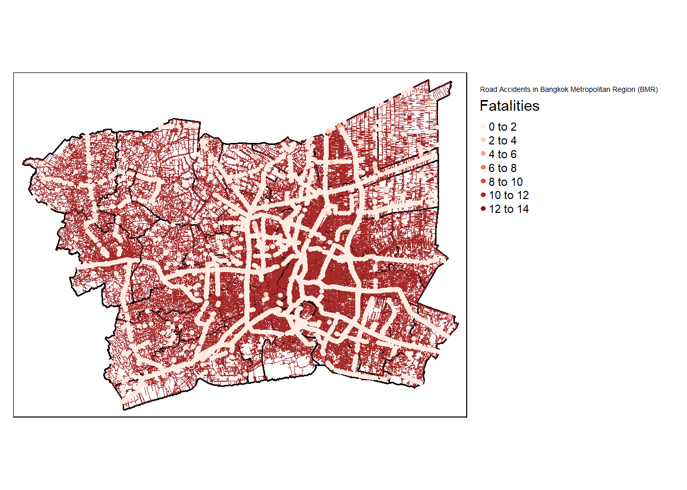
6.1 Spatial Distribution of Road Fatalities in Bangkok Metropolitan Region
To display the number of fatalities in each region, we will calculate the total number of fatalities for each administrative region and then update the map to reflect this in the tm_fill() function. Here’s how we can proceed:
Step 1: Aggregate the number of fatalities per region
We will group accident data by region and sum the number of fatalities for each region.
# Convert to a regular data frame
accidents_bmr_df <- as.data.frame(accidents_bmr)
# Rename the column
accidents_bmr_df <- accidents_bmr_df %>%
dplyr:::rename.data.frame(ADM1_EN = province_en)
# Convert back to an sf object
accidents_bmr <- st_as_sf(accidents_bmr_df)# Aggregate fatalities by region
fatalities_by_region <- accidents_bmr %>%
group_by(ADM1_EN) %>%
summarise(total_fatalities = sum(number_of_fatalities, na.rm = TRUE))Step 2: Join this aggregated data with your boundaries data
Next, join the aggregated fatalities data to your BMR boundaries:
# Convert fatalities_by_region to a regular data frame if needed
fatalities_by_region_df <- as.data.frame(fatalities_by_region)
# Perform a non-spatial left join to join the data with your boundaries
admin_boundaries_bmr <- admin_boundaries_bmr_simplified %>%
left_join(fatalities_by_region_df, by = "ADM1_EN")Step 3: Update map to show the number of fatalities
Now, modify the tm_fill() function to reflect the total fatalities in each region:
# Create a thematic map showing the number of fatalities per region
tm_shape(admin_boundaries_bmr) +
tm_fill(col = "total_fatalities", # Column to display
palette = "Reds", # Color palette
title = "Total Fatalities") + # Legend title
tm_borders() +
tm_shape(accidents_bmr) +
tm_dots(size = 0.1, col = "red") +
tm_layout(title = "Total Fatalities in BMR",
legend.outside = TRUE)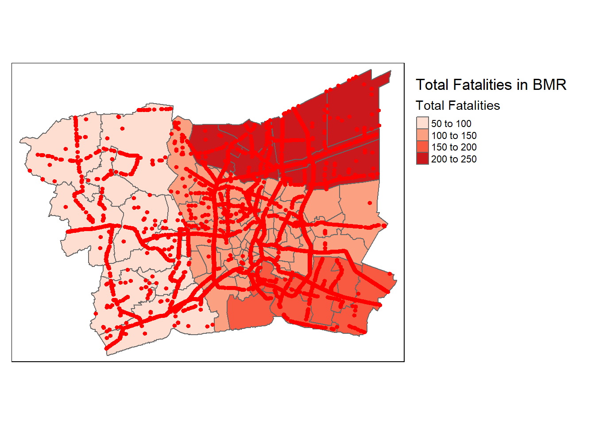
The thematic map produced displays the total fatalities across the BMR, with the number of fatalities color-coded by region. The red dots represent individual accident locations, and the underlying color gradient indicates the total fatalities aggregated by region.
Key Observations:
High Fatality Regions:
- The northern part of the BMR, particularly regions like Nonthaburi, Nakhon Pathom, and parts of Bangkok, are represented with darker shades of red, indicating these areas have the highest total fatalities, falling within the 150–250 range.
Moderate Fatality Regions:
- Regions like Samut Prakan and parts of Pathum Thani show moderate total fatalities, ranging from 100 to 150.
Low Fatality Regions:
- The southern regions, such as Samut Sakhon, have relatively lower total fatalities, indicated by lighter shades of red.
Let’s investigate the underlying causes of road accidents in these regions. Here could be some of the reasons:
Risk Behaviors in Different Travel Modes: A study conducted in the BMR highlights that different modes of travel, such as motorcycles, cars, and public transportation, carry varying levels of risk perception. Vulnerable road users like pedestrians and cyclists tend to be more aware of risky behaviors than those driving cars or motorcycles. This is crucial since most accidents in Bangkok involve motorcycles, which are more vulnerable to high fatality rates (Structurae).
Weather conditions: It does have a significant impact on road accidents in the BMR. Rain, in particular, leads to increased risks due to slippery roads and reduced visibility. Heavy rainfall can cause dangerous driving conditions such as hydroplaning and longer braking distances, which lead to higher accident rates. Furthermore, flooding, which is common in Bangkok during monsoon seasons, exacerbates these dangers by making certain roads impassable or more dangerous to navigate, leading to crashes or vehicle damage (MDPI).
Seasonal Accident Trends: The number of accidents in Thailand tends to spike during specific periods like the New Year and Songkran festivals. While accident rates have gradually decreased over the years, the high involvement of motorcycles remains a constant challenge. Studies report that nearly 80% of accidents during these peak periods involve motorcycles, further highlighting the vulnerability of two-wheeler users (ThaiWebsites).
Contributing Factors: Key factors like road design, driver behavior, and enforcement of traffic laws play significant roles in accidents. In Bangkok, accidents tend to occur more frequently on straight road sections (ThaiWebsites). This is compounded by driver fatigue, drug use, and reckless driving, which are common causes of accidents (Structurae).
7 Visualizing Spatio-Temporal Dynamics of Road Accidents
7.1 Risk Behaviors in Different Travel Modes
Classify the different travel modes
Identify modes of transport: Use the column in your accident data that lists vehicle types (e.g., “vehicle_type”).
Filter for key modes: Extract data for motorcycles, cars, and public transport. This will allow you to isolate accidents involving these different modes of travel.
Geospatial Analysis: Using the boundaries and road network, spatially analyze where accidents involving motorcycles, cars, and public transport occur. This can highlight spatial patterns of risk behavior for each mode.
Use filter in R to classify accidents based on vehicle types:
# Reclassify vehicle types based on the image into distinct categories
pickup_truck_accidents <- filter(accidents_bmr, vehicle_type %in% c("4-wheel pickup truck", "passenger pickup truck"))
light_truck_accidents <- filter(accidents_bmr, vehicle_type %in% c("6-wheel truck", "7-10-wheel truck"))
heavy_truck_accidents <- filter(accidents_bmr, vehicle_type %in% c("large truck with trailer", "tractor/agricultural vehicle"))
motorcycle_accidents <- filter(accidents_bmr, vehicle_type == "motorcycle")
car_accidents <- filter(accidents_bmr, vehicle_type %in% c("private/passenger car", "van"))
bus_accidents <- filter(accidents_bmr, vehicle_type == "large passenger vehicle")
bicycle_accidents <- filter(accidents_bmr, vehicle_type == "bicycle")
pedestrian_accidents <- filter(accidents_bmr, vehicle_type == "pedestrian")
other_accidents <- filter(accidents_bmr, vehicle_type %in% c("motorized tricycle", "other"))Identify High-Risk Road Sections:
- Spatial point pattern analysis: Examine accident hotspots for each travel mode using Kernel Density Estimation (KDE). This can reveal high-risk road sections for different travel modes.
- Overlay accidents on road network: Use the road data (e.g., road type, surface quality, width) to analyze how specific road conditions impact accident risk for different modes.
Car accidents
# Ensure Car accidents are an sf object
car_accidents_sf <- st_as_sf(car_accidents)
tm_shape(admin_boundaries_bmr_simplified) + # BMR boundaries
tm_borders(lwd = 1.5, col = "black") + # Add borders for the regions
tm_fill(col = "ADM1_EN", palette = "Set3", title = "BMR Regions") + # Fill regions by name
tm_shape(car_accidents_sf) + # Add car accident points
tm_dots(col = "red", size = 0.1) + # Red dots for accident locations
tm_shape(roads_bmr) + # Add road network (no tm_raster, as it's a line)
tm_lines(col = "brown", lwd = 0.01, alpha = 0.1) +
tm_layout(title = "Car Accident in BMR", legend.outside = TRUE) # Layout settingsPickup Truck accidents
# Ensure Pickup Truck accidents are an sf object
pickup_truck_accidents_sf <- st_as_sf(pickup_truck_accidents)
tm_shape(admin_boundaries_bmr_simplified) + # BMR boundaries
tm_borders(lwd = 1.5, col = "black") + # Add borders for the regions
tm_fill(col = "ADM1_EN", palette = "Set3", title = "BMR Regions") + # Fill regions by name
tm_shape(pickup_truck_accidents_sf) + # Add pick up truck accident points
tm_dots(col = "red", size = 0.1) + # Red dots for accident locations
tm_shape(roads_bmr) + # Add road network (no tm_raster, as it's a line)
tm_lines(col = "brown", lwd = 0.01, alpha = 0.1) +
tm_layout(title = "Pickup Truck Accident in BMR", legend.outside = TRUE) # Layout settingsMotorcycle accidents
# Ensure motorcycle accidents are an sf object
motorcycle_accidents_sf <- st_as_sf(motorcycle_accidents)
tm_shape(admin_boundaries_bmr_simplified) + # BMR boundaries
tm_borders(lwd = 1.5, col = "black") + # Add borders for the regions
tm_fill(col = "ADM1_EN", palette = "Set3", title = "BMR Regions") + # Fill regions by name
tm_shape(motorcycle_accidents_sf) + # Add motorcycle accident points
tm_dots(col = "red", size = 0.1) + # Red dots for accident locations
tm_shape(roads_bmr) + # Add road network (no tm_raster, as it's a line)
tm_lines(col = "brown", lwd = 0.01, alpha = 0.1) +
tm_layout(title = "Motorcycle Accident in BMR", legend.outside = TRUE) # Layout settingsThe analysis of the top three vehicle types involved in accidents in the BMR is as follows:
Cars:
- Private or passenger cars constitute the largest portion of vehicles involved in accidents. This finding is consistent with the high prevalence of private cars on the road. In urban environments like Bangkok, car congestion, driver distractions, and speeding could all contribute to the higher accident rate. The dense traffic conditions and complex road networks, including narrow streets and frequent intersections, could lead to a higher likelihood of collisions involving passenger vehicles.
Pickup Truck accidents:
- Pickup trucks come in second. Pickup trucks are popular for both personal and commercial use in Thailand, making them a significant part of road traffic. Their larger size compared to private cars can also be a factor in more severe accidents, particularly in high-speed zones or when maneuvering through tight urban roads. Furthermore, the high usage of pickup trucks for goods transportation, often overloaded, can increase risks, especially on highways or rural roads leading into the metropolitan area.
Motorcycles:
- Motorcycles rank third. Despite being the third most common type in the dataset, motorcycles are particularly vulnerable due to the lack of protective barriers for the driver and passengers. In many cases, motorcycle accidents result in higher fatality rates compared to cars or trucks. The high number of motorcycles on the road in Bangkok, combined with factors like weaving through traffic, poor visibility in certain weather conditions, and risky driving behavior, may explain their high involvement in road accidents.
The dominance of private cars, pickup trucks, and motorcycles in accident statistics underscores the need for targeted safety measures. For private cars and pickup trucks, enhancing road infrastructure, promoting safer driving practices, and enforcing traffic laws are essential. For motorcycles, encouraging the use of protective gear, increasing awareness about the dangers of risky driving behaviors, and developing safer motorcycle lanes could help reduce accidents and fatalities. Additionally, analyzing accident hotspots and times (such as peak traffic hours) could provide insights for reducing accident rates among these top vehicle types.
7.2 Weather conditions
7.2.1 Spatial Distribution by Weather Condition
We overlay traffic accidents filtered by weather conditions (clear, dark, rainy, etc.) on the BMR map, showing which regions experience higher fatalities or injuries under different weather conditions.
Use filtering: Filter accidents by weather conditions in your dataset.
Dot maps: Overlay dots representing accidents on the BMR map, colored by weather condition.
By number of accidents
# Filter accidents based on weather conditions
clear_accidents <- filter(accidents_bmr, weather_condition == "clear")
rainy_accidents <- filter(accidents_bmr, weather_condition == "rainy")
dark_accidents <- filter(accidents_bmr, weather_condition == "dark")
foggy_accidents <- filter(accidents_bmr, weather_condition == "foggy")
landslide_accidents <- filter(accidents_bmr, weather_condition == "land slide")
natural_disaster_accidents <- filter(accidents_bmr, weather_condition == "natural disaster")
other_accidents <- filter(accidents_bmr, weather_condition == "other")
# Create map combining regions, roads, and weather conditions
tm_shape(admin_boundaries_bmr_simplified) +
# Fill regions by name
tm_fill(col = "ADM1_EN", palette = "Set3", title = "BMR Regions") +
tm_borders() +
# Add roads
tm_shape(roads_bmr) + # Add road network (no tm_raster, as it's a line)
tm_lines(col = "brown", lwd = 0.01, alpha = 0.1) +
# Plot accidents for each weather condition with different colors
tm_shape(clear_accidents) +
tm_dots(col = "blue", size = 0.1, alpha = 0.7) +
tm_shape(rainy_accidents) +
tm_dots(col = "red", size = 0.1, alpha = 0.7) +
tm_shape(dark_accidents) +
tm_dots(col = "black", size = 0.1, alpha = 0.7) +
tm_shape(foggy_accidents) +
tm_dots(col = "purple", size = 0.1, alpha = 0.7) +
tm_shape(landslide_accidents) +
tm_dots(col = "green", size = 0.1, alpha = 0.7) +
tm_shape(natural_disaster_accidents) +
tm_dots(col = "orange", size = 0.1, alpha = 0.7) +
tm_shape(other_accidents) +
tm_dots(col = "yellow", size = 0.1, alpha = 0.7) +
# Add a custom legend for weather conditions
tm_add_legend(type = "symbol",
col = c("blue", "red", "black", "purple", "green", "orange", "yellow"),
labels = c("Clear", "Rainy", "Dark", "Foggy", "Landslide", "Natural Disaster", "Other"),
title = "Weather Conditions") +
# Layout settings
tm_layout(title = "Traffic Accidents by Weather in BMR with Regions and Roads",
legend.outside = TRUE,
legend.outside.position = "right")By number of fatalities
# Create map for fatalities
tm_shape(admin_boundaries_bmr_simplified) +
# Fill regions by name
tm_fill(col = "ADM1_EN", palette = "Set3", title = "BMR Regions") +
tm_borders() +
# Add roads
tm_shape(roads_bmr) + # Add road network (no tm_raster, as it's a line)
tm_lines(col = "brown", lwd = 0.01, alpha = 0.1) +
# Plot accidents with fatalities for each weather condition
tm_shape(clear_accidents) +
tm_dots(size = "number_of_fatalities", col = "blue", title = "Clear Weather (Fatalities)") +
tm_shape(rainy_accidents) +
tm_dots(size = "number_of_fatalities", col = "red", title = "Rainy Weather (Fatalities)") +
tm_shape(dark_accidents) +
tm_dots(size = "number_of_fatalities", col = "black", title = "Dark Weather (Fatalities)") +
tm_shape(foggy_accidents) +
tm_dots(size = "number_of_fatalities", col = "purple", title = "Foggy Weather (Fatalities)") +
tm_shape(landslide_accidents) +
tm_dots(size = "number_of_fatalities", col = "green", title = "Landslide Weather (Fatalities)") +
tm_shape(natural_disaster_accidents) +
tm_dots(size = "number_of_fatalities", col = "orange", title = "Natural Disaster (Fatalities)") +
tm_shape(other_accidents) +
tm_dots(size = "number_of_fatalities", col = "yellow", title = "Other Weather (Fatalities)") +
# Add a custom legend for weather conditions
tm_add_legend(type = "symbol",
col = c("blue", "red", "black", "purple", "green", "orange", "yellow"),
labels = c("Clear", "Rainy", "Dark", "Foggy", "Landslide", "Natural Disaster", "Other"),
title = "Weather Conditions") +
# Layout settings
tm_layout(title = "Fatalities by Weather in BMR with Regions and Roads",
legend.outside = TRUE,
legend.outside.position = "right")By number of injuries
# Create map for injuries
tm_shape(admin_boundaries_bmr_simplified) +
# Fill regions by name
tm_fill(col = "ADM1_EN", palette = "Set3", title = "BMR Regions") +
tm_borders() +
# Add roads
tm_shape(roads_bmr) + # Add road network (no tm_raster, as it's a line)
tm_lines(col = "brown", lwd = 0.01, alpha = 0.1) +
# Plot accidents with injuries for each weather condition
tm_shape(clear_accidents) +
tm_dots(size = "number_of_injuries", col = "blue", title = "Clear Weather (Injuries)") +
tm_shape(rainy_accidents) +
tm_dots(size = "number_of_injuries", col = "red", title = "Rainy Weather (Injuries)") +
tm_shape(dark_accidents) +
tm_dots(size = "number_of_injuries", col = "black", title = "Dark Weather (Injuries)") +
tm_shape(foggy_accidents) +
tm_dots(size = "number_of_injuries", col = "purple", title = "Foggy Weather (Injuries)") +
tm_shape(landslide_accidents) +
tm_dots(size = "number_of_injuries", col = "green", title = "Landslide Weather (Injuries)") +
tm_shape(natural_disaster_accidents) +
tm_dots(size = "number_of_injuries", col = "orange", title = "Natural Disaster (Injuries)") +
tm_shape(other_accidents) +
tm_dots(size = "number_of_injuries", col = "yellow", title = "Other Weather (Injuries)") +
# Add a custom legend for weather conditions
tm_add_legend(type = "symbol",
col = c("blue", "red", "black", "purple", "green", "orange", "yellow"),
labels = c("Clear", "Rainy", "Dark", "Foggy", "Landslide", "Natural Disaster", "Other"),
title = "Weather Conditions") +
# Layout settings
tm_layout(title = "Fatalities by Weather in BMR with Regions and Roads",
legend.outside = TRUE,
legend.outside.position = "right")7.2.2 Temporal Analysis
We analyze how the frequency of accidents varies across different times of day, months, or years for various weather conditions. This can be achieved by:
Aggregating accident data by time period (hour, day, month, year) and weather condition.
Time-series plots: Create time-series plots for each weather condition, showing the number of accidents over time.
Heatmaps: Visualize accident frequencies across different times of day and months.
Step 1: Aggregating Accident Data by Time Period and Weather Condition
We can aggregate the accident data by different time period such as hour, day, month, or year, and by weather condition.
# Aggregate data by month and weather condition
accidents_by_month_weather <- accidents_bmr %>%
dplyr:::group_by.data.frame(Month_num, Month_fac, weather_condition) %>%
summarise(total_fatalities = sum(number_of_fatalities, na.rm = TRUE),
total_injuries = sum(number_of_injuries, na.rm = TRUE))
# Aggregate by hour and weather condition
accidents_by_hour_weather <- accidents_bmr %>%
mutate(hour = lubridate::hour(incident_datetime)) %>%
group_by(hour, weather_condition) %>%
summarise(total_fatalities = sum(number_of_fatalities, na.rm = TRUE),
total_injuries = sum(number_of_injuries, na.rm = TRUE))Step 2: Time-Series Plots for Each Weather Condition
We can create time-series plots to visualize the number of accidents over time (for instance, by hour or month).
# Time-series plot of accidents by month and weather condition
ggplot(accidents_by_month_weather, aes(x = Month_num, y = total_fatalities, color = weather_condition, group = weather_condition)) +
geom_line() +
labs(title = "Monthly Accidents by Weather Condition",
x = "Month", y = "Number of Fatalities") +
scale_x_continuous(breaks = 1:12, labels = unique(accidents_by_month_weather$Month)) +
theme_minimal()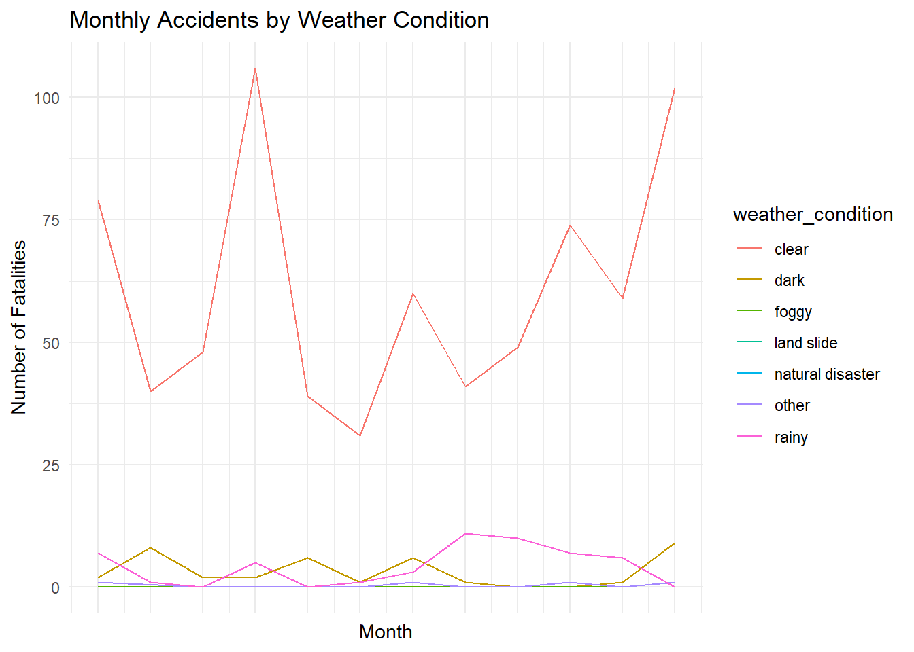
Step 3: Heatmaps to Visualize Accident Frequencies
We can create heatmaps to visualize accident frequencies across different times of day and months.
# Heatmap of accidents by hour and weather condition
ggplot(accidents_by_hour_weather, aes(x = hour, y = weather_condition, fill = total_fatalities)) +
geom_tile() +
labs(title = "Accidents by Hour and Weather Condition",
x = "Hour", y = "Weather Condition", fill = "Fatalities") +
scale_fill_viridis_c(option = "C") +
theme_minimal()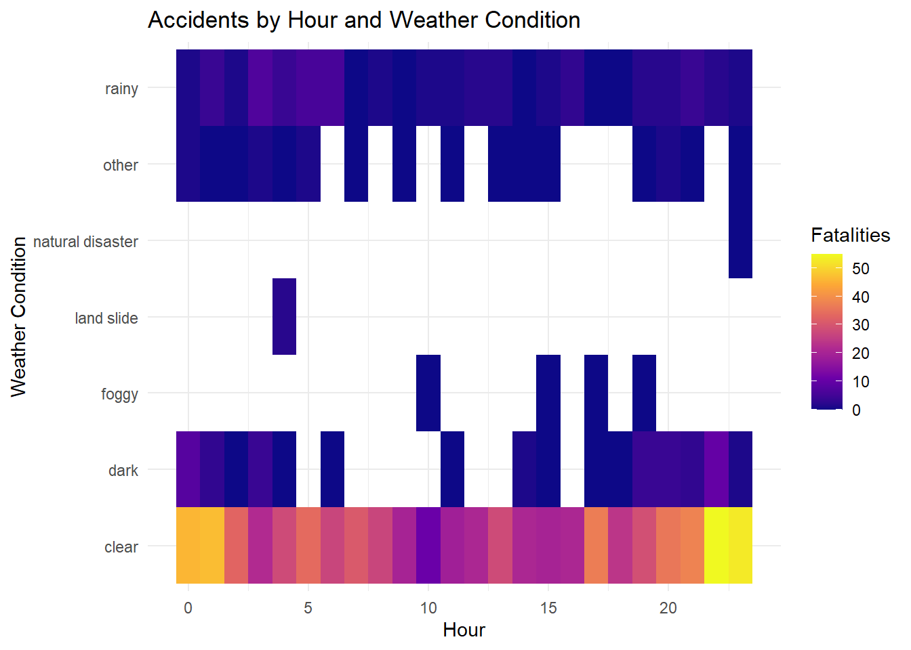
7.2.3 Combining Spatial & Temporal Analysis
Below shows how accidents evolve spatially over time under different weather conditions:
Ensure the dataset includes a temporal component (e.g., month, year) and spatial geometry (sf object). You can modify your existing accidents_bmr dataset if it’s not already in the correct format.
# Convert 'incident_datetime' to date format if not already
accidents_bmr <- accidents_bmr %>%
mutate(incident_datetime = as.POSIXct(incident_datetime, format = "%m/%d/%Y %H:%M"))
# Add a 'month_year' column for easier temporal analysis
accidents_bmr <- accidents_bmr %>%
mutate(month_year = format(incident_datetime, "%Y-%m"))
# Ensure that the dataset is an sf object
accidents_bmr_sf <- st_as_sf(accidents_bmr, coords = c("longitude", "latitude"), crs = 4326)We can set up tmap_animation() to visualize the accident data across months or years while factoring in weather conditions.
# Switch to view mode for interactive animations
tmap_mode("view")
# Create the animated map
tmap_animation(
tm_shape(accidents_bmr_sf) + # Load accident data as sf object
tm_dots(col = "weather_condition", palette = "Set1", size = 0.1, title = "Weather Conditions") +
tm_facets(along = "month_year", free.coords = FALSE) + # Create facets by month-year
tm_shape(admin_boundaries_bmr) + # Add BMR boundaries
tm_borders(lwd = 1, col = "black") + # Add boundaries outline
tm_layout(title = "Accident Distribution Over Time by Weather Conditions in BMR",
legend.outside = TRUE), # Layout settings for the map
filename = "accidents_bmr_animation.gif", # Save as gif
width = 800, height = 600, delay = 60 # Define gif size and frame delay
)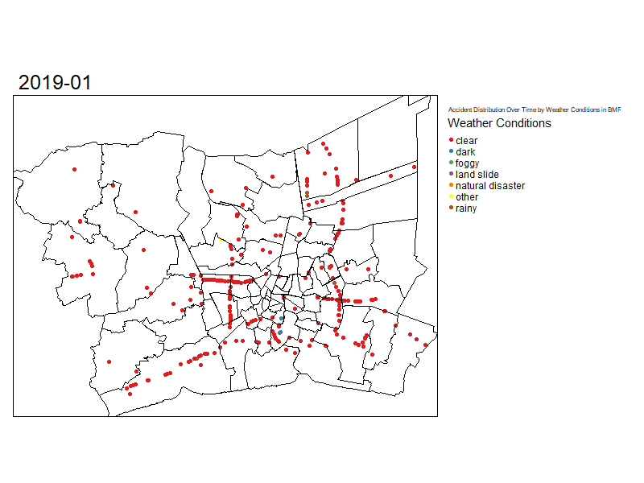
From the analysis of the weather conditions and accidents in the BMR, we can observe a significant difference in the number of accidents under different weather conditions:
Clear Weather:
The vast majority of accidents, approximately 11,711 incidents, occur under clear weather conditions.
This indicates that even in optimal weather conditions with clear visibility and road conditions, accidents are still prevalent.
The map shows widespread distribution of these accidents across all regions of the BMR, with a noticeable concentration along major road networks and urban areas like Bangkok. The high volume of traffic and higher speed limits during clear weather may contribute to the increased number of accidents.
Rainy Weather:
The second most common weather condition associated with accidents is rainy weather, with 1,166 incidents.
Rain increases the risk of accidents due to factors such as reduced visibility, slippery roads, and longer stopping distances.
The map shows clusters of accidents during rainy weather, particularly along major highways and arterial roads. Regions like Pathum Thani and Samut Prakan appear to have a higher density of accidents in rainy conditions, which may be due to the poor drainage systems or high traffic flow.
Comparison:
Clear vs. Rainy Conditions:
While clear weather accounts for more accidents due to the higher volume of vehicles on the road and possibly higher speeds, rainy conditions present their own hazards. The number of accidents during rain, while lower, still shows that driving in adverse weather remains a significant risk factor, especially in certain regions.
Both conditions demonstrate the importance of maintaining road safety awareness regardless of weather, but special caution is needed during rain, as visibility and road conditions deteriorate.
Key Takeaways:
In clear weather, driver behavior such as speeding and not paying attention may be primary factors for accidents.
In rainy weather, the road conditions become more challenging, and accidents might result from hydroplaning, reduced grip on the road, or poor visibility. It’s important to enforce road safety laws and awareness campaigns to reduce accidents in both conditions.
The map visualizes how accidents are distributed based on weather conditions, helping to understand areas where interventions (like better road design or stricter enforcement) may be needed to reduce the risks.
7.3 Seasonal Accident Trends Analysis (New Year and Songkran Festivals)
7.3.1 Filter Accident Data for New Year and Songkran:
We define the periods for the New Year and Songkran festivals in the dataset, then filter accidents that occurred during those times. The New Year generally spans from the 31st of December to the 2nd of January, and Songkran typically runs from the 13th to the 15th of April.
# Define New Year and Songkran periods
new_year_period <- c("12-31", "01-01", "01-02")
songkran_period <- c("04-13", "04-14", "04-15")
# Convert incident_datetime to Date format and extract the month-day part for comparison
accidents_bmr$month_day <- format(as.Date(accidents_bmr$incident_datetime), "%m-%d")
# Filter for New Year accidents
new_year_accidents <- accidents_bmr %>%
filter(month_day %in% new_year_period)
# Filter for Songkran accidents
songkran_accidents <- accidents_bmr %>%
filter(month_day %in% songkran_period)
# Combine both festivals
festival_accidents <- bind_rows(new_year_accidents, songkran_accidents)
# Summary statistics for both festivals
festival_summary <- festival_accidents %>%
group_by(vehicle_type) %>%
summarise(fatalities = sum(number_of_fatalities, na.rm = TRUE),
injuries = sum(number_of_injuries, na.rm = TRUE))7.3.2 Visualizing Accident Trends:
You can create time-series plots to analyze accident trends during New Year and Songkran festivals for various vehicle types, particularly motorcycles, which are more involved in accidents during these periods.
# Visualizing the time series trend of accidents during festivals by vehicle type
library(ggplot2)
ggplot(festival_accidents, aes(x = incident_datetime, fill = vehicle_type)) +
geom_histogram(binwidth = 86400) + # binwidth of one day
labs(title = "Accident Trends During New Year and Songkran Festivals",
x = "Date",
y = "Number of Accidents") +
theme_minimal() +
facet_wrap(~ vehicle_type)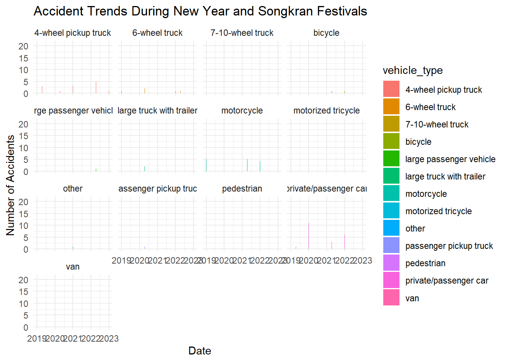
7.3.3 Heatmaps for Time of Day or Day of Week:
A heatmap can show accident frequencies during different times of the day or days of the week for these festival periods.
# Ensure incident_datetime is properly formatted and extract hour and day
festival_accidents$hour <- format(as.POSIXct(festival_accidents$incident_datetime), "%H")
festival_accidents$day <- format(as.POSIXct(festival_accidents$incident_datetime), "%A")
# Convert hour and day to factors (if necessary)
festival_accidents$hour <- as.factor(festival_accidents$hour)
festival_accidents$day <- as.factor(festival_accidents$day)
# Create a summary data frame with counts
accident_summary <- festival_accidents %>%
group_by(hour, day) %>%
summarise(count = n(), .groups = 'drop')
# Create the heatmap
ggplot(accident_summary, aes(x = hour, y = day, fill = count)) +
geom_tile(color = "white") +
scale_fill_gradient(low = "lightblue", high = "darkblue") +
labs(title = "Accident Heatmap by Hour and Day During New Year and Songkran",
x = "Hour of the Day",
y = "Day of the Week",
fill = "Number of Accidents") +
theme_minimal()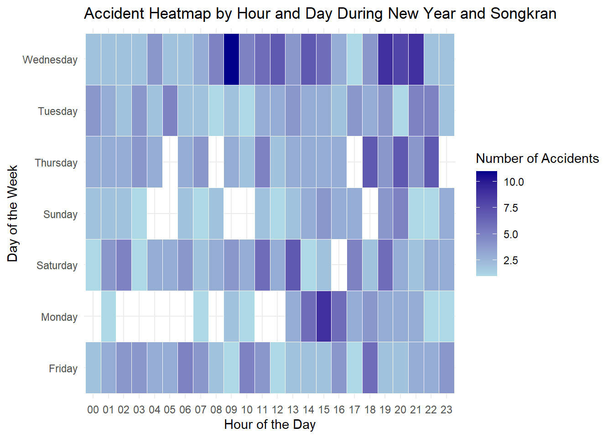
7.3.4 Mapping the Accidents (Spatial Distribution):
To analyze spatial trends during the festivals, we map the accidents for New Year and Songkran festivals using tmap:
# Visualize the accidents during festivals on a map
tm_shape(admin_boundaries_bmr_simplified) +
tm_polygons() +
tm_shape(festival_accidents) +
tm_dots(col = "vehicle_type", palette = "Set1", title = "Vehicle Type") +
tm_layout(title = "Accidents During Festivals (New Year & Songkran) in BMR")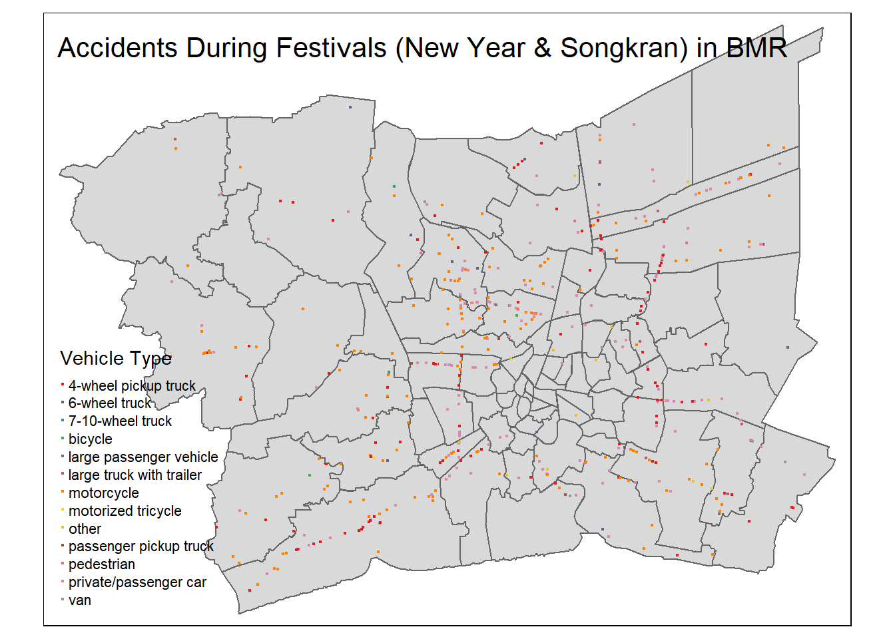
7.4 Other Contributing Factors
7.4.1 Road Design Analysis
Here’s how we can prepare, filter, and aggregate the accident data by road description, followed by combining this analysis with fatalities and injuries for each type of road.
Step 1: Aggregate Fatalities and Injuries by Road Type
Now, aggregate the number of fatalities and injuries for each type of road, similar to the table you shared.
# Aggregate fatalities and injuries by road type
road_aggregated <- accidents_bmr %>%
group_by(road_description) %>%
summarise(total_fatalities = sum(number_of_fatalities, na.rm = TRUE),
total_injuries = sum(number_of_injuries, na.rm = TRUE)) %>%
arrange(desc(total_fatalities))
# View the aggregated data
print(road_aggregated)Simple feature collection with 14 features and 3 fields
Geometry type: MULTIPOINT
Dimension: XY
Bounding box: xmin: 591277.5 ymin: 1486846 xmax: 710166.1 ymax: 1576520
Projected CRS: WGS 84 / UTM zone 47N
# A tibble: 14 × 4
road_description total_fatalities total_injuries geometry
<chr> <dbl> <dbl> <MULTIPOINT [m]>
1 straight road 639 6249 ((591277.5 1545514), (59…
2 other 89 539 ((604914.7 1548870), (60…
3 wide curve 45 254 ((605960.9 1537813), (60…
4 t-intersection 22 63 ((599469.8 1542071), (61…
5 y-intersection 8 35 ((629514.6 1526365), (62…
6 grade-separated in… 6 95 ((654173 1525967), (6560…
7 sharp curve 5 16 ((621201.3 1498072), (62…
8 connecting to publ… 4 35 ((606712.6 1557002), (60…
9 connecting to priv… 2 8 ((595545.3 1542719), (61…
10 four-way intersect… 2 4 ((616900.4 1556213), (62…
11 roundabout 1 2 ((614608.3 1523654), (65…
12 connecting to scho… 0 4 ((646878.1 1550240), (66…
13 merge lane 0 8 ((665780.8 1524036), (66…
14 u-turn area 0 3 ((641181.3 1509733), (66…Step 2: Visualize Accident Hotspots on Different Road Types
For visualization, we can use kernel density estimation (KDE) and spatial analysis to show accident hotspots and how they are distributed across different road types like straight roads, intersections, etc.
This display the density on a map, with red dots representing accident locations on straight roads within the BMR.
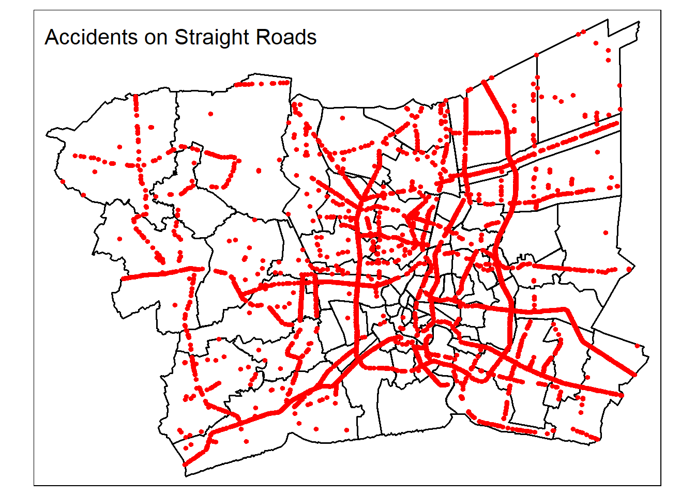
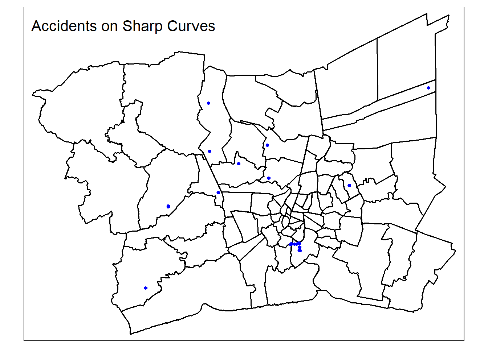
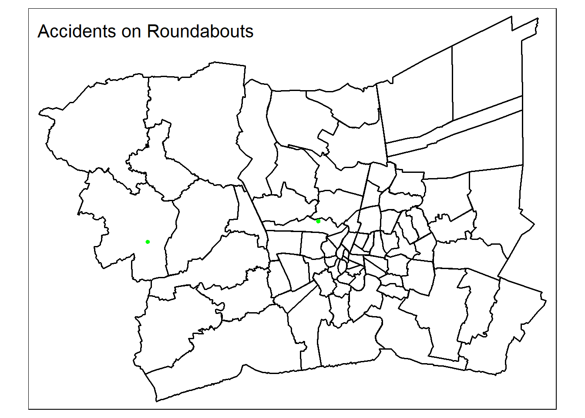
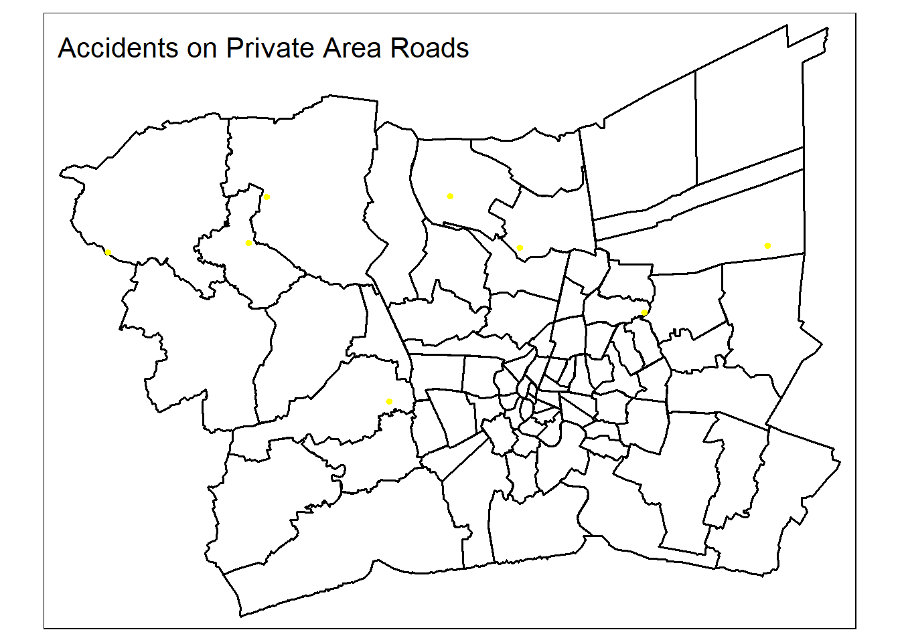
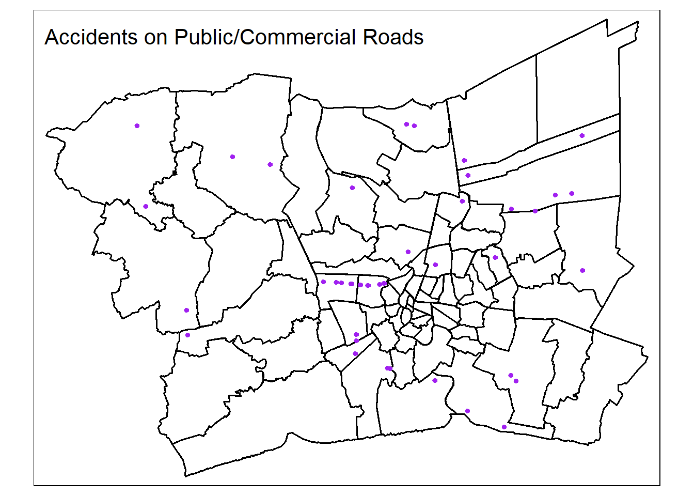
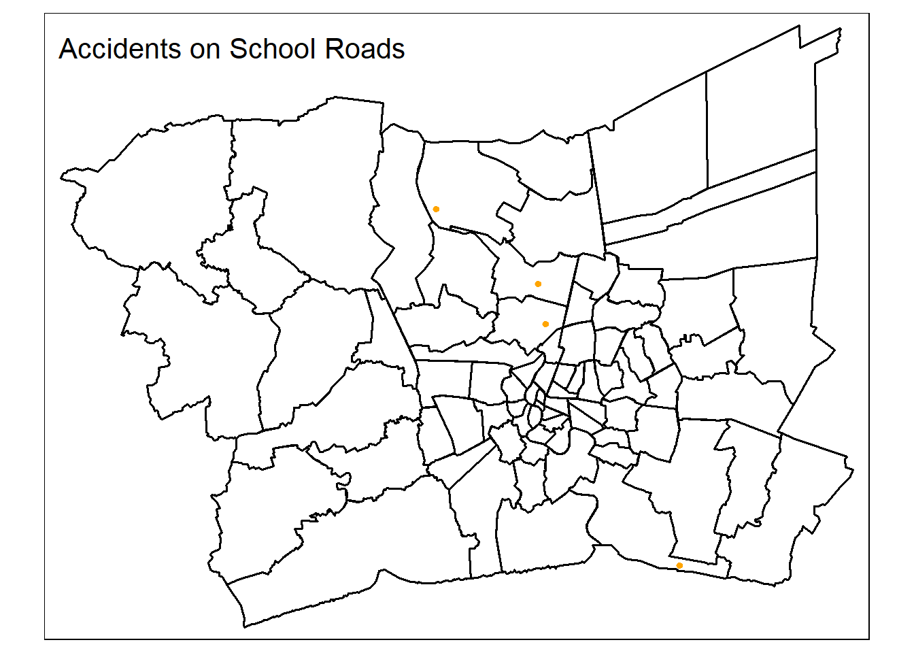

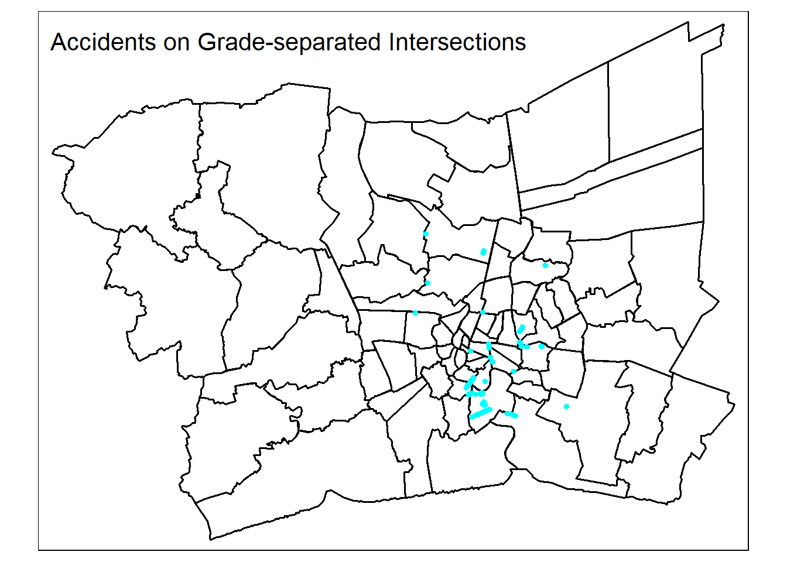
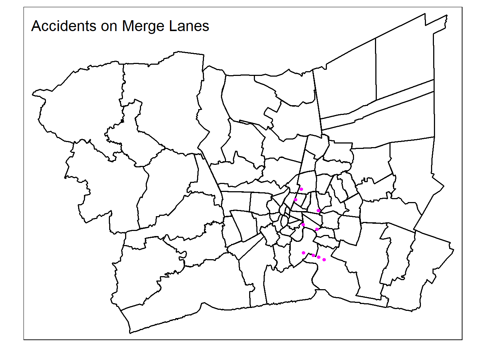
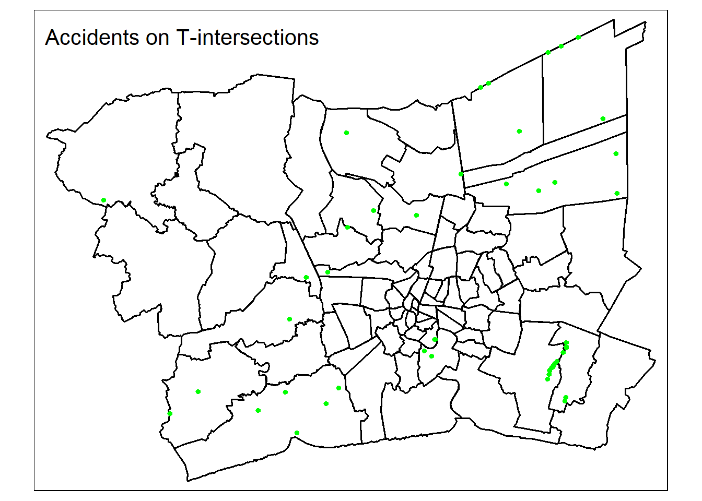
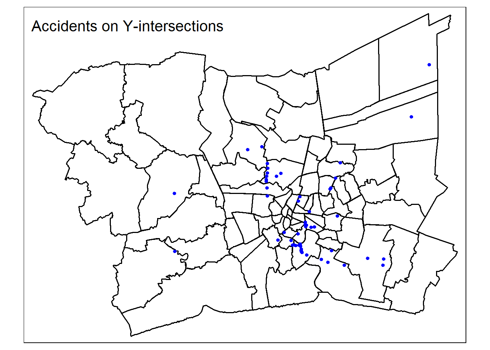
# Filter for specific road types, e.g., straight roads
straight_road_accidents <- accidents_bmr %>%
filter(road_description == "straight road")
# Convert to a spatial object
straight_road_accidents_sf <- st_as_sf(straight_road_accidents)
# Ensure the CRS is set correctly
st_crs(straight_road_accidents_sf) <- st_crs(admin_boundaries_bmr_simplified)
# Convert to spatstat format for density estimation
window <- as.owin(st_bbox(admin_boundaries_bmr_simplified))
straight_road_ppp <- as.ppp(st_coordinates(straight_road_accidents_sf), W = window)
# Perform Kernel Density Estimation with adjusted parameters
straight_road_density <- density(straight_road_ppp, sigma = 100, eps = 50, edge = TRUE)
# Convert the density output to a raster object
straight_road_density_raster <- raster(straight_road_density)
# Ensure raster and sf objects have the same CRS
crs(straight_road_density_raster) <- st_crs(admin_boundaries_bmr_simplified)$proj4string
# Plot Straight road accident density
tm_shape(admin_boundaries_bmr_simplified) +
tm_borders(col = "black", lwd = 1.5, alpha = 0.5) + # Add boundaries with semi-transparency
tm_shape(straight_road_density_raster) +
tm_raster(palette = "-viridis",
style = "fisher",
n = 9,
title = "Straight Road Accident Density",
alpha = 0.7) +
tm_shape(straight_road_accidents_sf) +
tm_dots(col = "red", size = 0.05, alpha = 0.5) +
tm_shape(admin_boundaries_bmr_simplified) + # Add boundaries again on top
tm_borders(col = "black", lwd = 1.5, alpha = 0.5) +
tm_layout(title = "Accident Density on Straight Roads in BMR",
legend.outside = TRUE,
legend.title.size = 0.8,
legend.text.size = 0.6,
frame = FALSE) +
tm_scale_bar(position = c("left", "bottom"))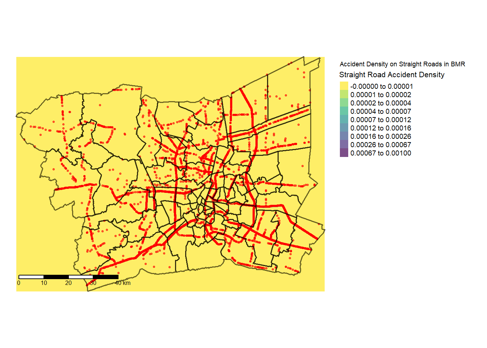
The map shows the Kernel Density Estimation (KDE) of road accidents on straight roads in the BMR. KDE is a technique used to estimate the density of events (accidents in this case) over a geographical area. The heatmap overlay on the map helps identify areas where accidents are most concentrated.
Interpretation:
High accident density on straight roads: The red dots represent accidents, and the colored density gradient (ranging from dark red to yellow) indicates accident density. The areas with darker red indicate higher concentrations of accidents.
Focus on hotspots: These high-density areas could point to specific road conditions, traffic patterns, or driver behavior that make straight roads particularly risky in these locations.
The observation that straight roads have the most accidents could be attributed to various factors such as high speed, inattentiveness, or driver fatigue, which are more common on long, straight sections of roads where drivers may feel more relaxed and less alert. These factors align with studies indicating that straight roads often lead to more severe accidents, especially at higher speeds. This analysis highlights the importance of focusing traffic safety measures, like speed controls and driver awareness programs, on these high-risk zones.
7.4.2 Further analysis on driver behavior on straight road
Step 1: Descriptive Statistics of Accidents on Straight Roads
- Filter the accidents for straight roads: Use the existing dataset to filter out the accidents that occurred specifically on straight roads.
straight_road_accidents <- filter(accidents_bmr, road_description == "straight road")- Summarize the causes of accidents: Aggregate the data by the presumed cause of accidents on straight roads to identify the primary causes. This will give you a breakdown of accidents on straight roads by cause, fatalities, and injuries.
# Aggregate accident counts by presumed cause
straight_road_accident_causes_aggregated <- straight_road_accidents %>%
group_by(presumed_cause) %>%
summarise(total_accidents = n()) %>%
arrange(desc(total_accidents))
# View the aggregated data in descending order
print(straight_road_accident_causes_aggregated)Simple feature collection with 36 features and 2 fields
Geometry type: GEOMETRY
Dimension: XY
Bounding box: xmin: 591277.5 ymin: 1486846 xmax: 710166.1 ymax: 1576520
Projected CRS: WGS 84 / UTM zone 47N
# A tibble: 36 × 3
presumed_cause total_accidents geometry
<chr> <int> <MULTIPOINT [m]>
1 speeding 8829 ((593843.8 1550868), (59…
2 other 716 ((624456.5 1494214), (63…
3 cutting in closely by people/vehic… 529 ((595540.6 1542724), (60…
4 vehicle equipment failure 325 ((606366 1562577), (6066…
5 falling asleep 189 ((597876.3 1547500), (60…
6 driving under the influence of alc… 95 ((607471.8 1545956), (61…
7 tailgating 67 ((622420.1 1491733), (64…
8 running red lights/traffic signals 62 ((611111.8 1526277), (62…
9 abrupt lane change 42 ((603057.8 1533623), (63…
10 illegal overtaking 41 ((622895.3 1508505), (62…
# ℹ 26 more rowsStep 2: Spatial Visualization of Accident Causes
- Create separate maps showing the distribution of accidents on straight roads by specific causes. For example, a map for accidents caused by speeding, driver fatigue, and reckless driving.
tm_shape(admin_boundaries_bmr_simplified) +
tm_borders(lwd = 1.5, col = "black") +
tm_shape(roads_bmr) + # Add road network (no tm_raster, as it's a line)
tm_lines(col = "brown", lwd = 0.01, alpha = 0.1) +
tm_shape(filter(accidents_bmr, road_description == "straight road" & presumed_cause == "speeding")) +
tm_dots(col = "red", size = 0.1, title = "Speeding Accidents") +
tm_layout(title = "Speeding Accidents on Straight Roads", legend.outside = TRUE)tm_shape(admin_boundaries_bmr_simplified) +
tm_borders(lwd = 1.5, col = "black") +
tm_shape(roads_bmr) + # Add road network (no tm_raster, as it's a line)
tm_lines(col = "brown", lwd = 0.01, alpha = 0.1) +
tm_shape(filter(accidents_bmr, road_description == "straight road" & presumed_cause == "cutting in closely by people/vehicles/animals")) +
tm_dots(col = "red", size = 0.1, title = "Other Causes Accidents") +
tm_layout(title = "Other Causes Accidents on Straight Roads", legend.outside = TRUE)tm_shape(admin_boundaries_bmr_simplified) +
tm_borders(lwd = 1.5, col = "black") +
tm_shape(roads_bmr) + # Add road network (no tm_raster, as it's a line)
tm_lines(col = "brown", lwd = 0.01, alpha = 0.1) +
tm_shape(filter(accidents_bmr, road_description == "straight road" & presumed_cause == "cutting in closely by people/vehicles/animals")) +
tm_dots(col = "red", size = 0.1, title = "People and Animal related Accidents") +
tm_layout(title = "People and Animal related Accidents on Straight Roads", legend.outside = TRUE)tm_shape(admin_boundaries_bmr_simplified) +
tm_borders(lwd = 1.5, col = "black") +
tm_shape(roads_bmr) + # Add road network (no tm_raster, as it's a line)
tm_lines(col = "brown", lwd = 0.01, alpha = 0.1) +
tm_shape(filter(accidents_bmr, road_description == "straight road" & presumed_cause == "vehicle equipment failure")) +
tm_dots(col = "red", size = 0.1, title = "Vehicle Equipment Failure related Accidents") +
tm_layout(title = "Vehicle Equipment Failure related Accidents on Straight Roads", legend.outside = TRUE)tm_shape(admin_boundaries_bmr_simplified) +
tm_borders(lwd = 1.5, col = "black") +
tm_shape(roads_bmr) + # Add road network (no tm_raster, as it's a line)
tm_lines(col = "brown", lwd = 0.01, alpha = 0.1) +
tm_shape(filter(accidents_bmr, road_description == "straight road" & presumed_cause == "vehicle equipment failure")) +
tm_dots(col = "red", size = 0.1, title = "Vehicle Equipment Failure related Accidents") +
tm_layout(title = "Vehicle Equipment Failure related Accidents on Straight Roads", legend.outside = TRUE)Step 3: Comparative Analysis by Region:
We also compare which regions within BMR are more prone to certain types of accidents on straight roads. Create a heatmap or bar chart showing the distribution by region.
region_comparison <- accidents_bmr %>%
filter(road_description == "straight road") %>%
group_by(ADM1_EN, presumed_cause) %>%
summarise(total_accidents = n())
ggplot(region_comparison, aes(x = ADM1_EN, y = total_accidents, fill = presumed_cause)) +
geom_bar(stat = "identity", position = "dodge") +
labs(title = "Accidents on Straight Roads by Region and Cause", x = "Region", y = "Total Accidents") +
theme_minimal()